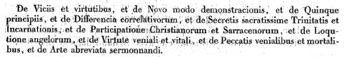
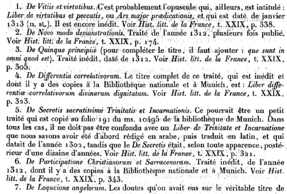
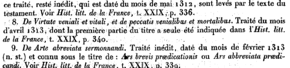
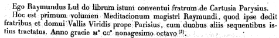
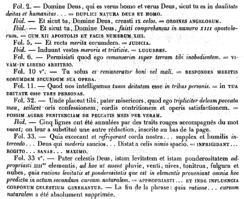
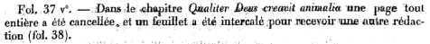
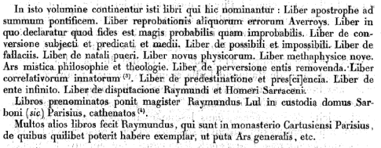
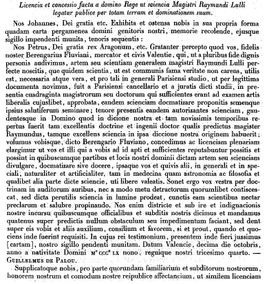
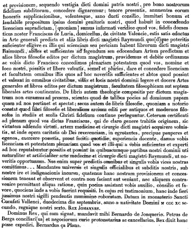

L’ELUCIDATION OU L’ECLAIRCISSEMENT DU TESTAMENT
DE
RAIMOND LULLEPar lui-même.
(Bibliothèque des Philosophes Alchimiques, Vol. IV. Paris, 1754)
mis à jour le 28 juin 2002
Plan : Introduction - Eléments biographiques [Gérardin - Hoefer -Sadoul] - Vrais testaments d'Arnaud de Villeneuve et de Raymond Lulle (extrait du Journal des Savants, 1896) - Testament de R. Lull [extrait de la Revue Historique, 1896)- l'Elucidation -
I. IntroductionC'est le second texte attribué à Raymond Lulle que nous insérons dans nos traités commentés. Il s'agit là d'un texte « de repos », court, qui permet de faire le point sur des aspects importants du processus alchimique. Ce type de texte nous a permis d'insérer un fragment important du Dictionnaire mytho-hermétique de Dom Pernety, dont nous avons parlé tant de fois dans d'autres sections et qui n'a d'égal à nos yeux que les Fulcanelli. Le texte qu'on lira plus bas apparaît dans la Bibliothèque des Philosophes Chimiques, au volume IV, n° 26. Il n'est pas cité, semble-t-il par Fulcanelli ni E. Canseliet. L. Gérardin, dans son Alchimie, consacre un chapitre à Lulle mais ne cite pas le l'Elucidation.Voici en revanche quelques lignes qu'il a écrites sur Lulle :
1)- L. Gérardin [Alchimie, Art, Culture, Loisir, 1972]
[...] Le personnage paraît envoûtant et complexe. Missionnaire exalté, il cherche le martyre.Logicien forcené, il invente les premières machines à raisonner, préfiguration des modernes ordinateurs. Poète, il écrit des vers et des romans allégoriques que les Catalans admirent toujours.Alchimiste, on le révère comme un maître incontesté.
De famille noble, Ramon Lull naquit en 1235 à Palma de Majorque. Destiné à la vie de cour, il fut nommé grand sénéchal d'Aragon par la faveur de son suzerain, le roi Jacques Ier. Sa famille avait essayé de lui faire poursuivre quelques études, mais un gentilhomme espagnol héritier d'une noble et riche famille n'avait guère besoin d'être savant. Dans une cour dissolue, il trouvera moyen de se faire remarquer par sa débauche. On le maria ; il fit des enfants à la riche héritière qu'on lui avait choisie, mais n'en continua pas moins à donner la sérénade. Poursuivant de ses assiduités une femme mariée, Dona Ambrosia, il poussa l'extravagance jusqu'à la poursuivre à cheval dans une église. Et puis, brusquement, il eut des visions mystiques : le Christ lui apparut. Abandonnant sa famille, Lull se retira pour méditer sur le mont Randa, une croupe aride dont les arêtes charpentent l'île de Majorque. Ses amis ne virent là qu'une nouvelle extravagance, mais lui y trouva sa vérité. Une nuit, il eut la révélation d'un Art admirable qui expliquait tout, et il descendit, transformé, du mont Randa. Devant le scepticisme de ses concitoyens, il décida d'utiliser son Art pour convaincre les musulmans de l'incohérence logique de leurs croyances afin de les convertir. Il apprit l'arabe et voulut persuader de la valeur de ses projets le pape, puis le roi d'Aragon rencontré en 1289 à Montpellier. Il aurait à ce moment suivi les leçons d'Arnauld de Villeneuve, ce qui ne semble pas impossible. Faisant une nouvelle tentative en 1291 auprès du pape Nicolas IV, il fut éconduit et traité de fou. Il l'était sans doute un peu puisqu'il décida d'aller seul à Tunis pour convaincre les docteurs musulmans. Le bey condamna à mort le malheureux missionnaire, mais un musulman influent, instruit et tolérant, fit admettre qu'on ne pouvait exécuter un fou ! Relâché, chassé, Lull fut ramené à Gênes, d'où il descendit à la cour de Naples, vers 1292. Arnauld de Villeneuve s'y trouvait aussi et les deux hommes ont pu à nouveau se rencontrer. Le Majorquin essaie une fois de plus de persuader le pape Clément V, puis Boniface VIII son successeur, du bien-fondé de sa mission. Aucun succès. Déçu, Lull se remet à voyager: Montpellier, Gênes, Majorque, Paris où il séjourne en 1298 pour faire approuver l'enseignement de son Art. En 1305, âgé de soixante-dix ans, il retourne en Afrique et réussit à convertir des musulmans à Bône. On l'arrête à Alger et on le chasse de la ville. A Bougie, on le jette en prison. Relâché en 1307, i1 revient en Italie et fait naufrage en vue des côtes. Une fois de plus, il veut convaincre la cour papale de la justesse de ses vues. Se heurtant à une nouvelle fin de non-recevoir, il décide de prêcher seul la croisade. Revenu à Tunis, il y est maltraité par la populace qui le laisse pour mort sur place. Des marchands génois le recueillent et il meurt à bord de leur vaisseau.Que contenait ce Grand Art qui devait convaincre les musulmans de leurs erreurs ? Les érudits en ont longuement discuté. Malgré les nombreux ouvrages laissés par le logicien majorquin, il reste de nombreuses incertitudes. La chose n'a rien d'étonnant : les volumineux traités de Lull ont été étudiés par des philosophes et des historiens alors que sa méthode ressort de la logique formelle et s'apparente aux mathématiques les plus modernes. Pour avoir réellement compris Lull, il n'y a guère que Leibniz, un des fondateurs du calcul infinitésimal, de surcroît grand logicien et profond philosophe. Le Grand Art se présente comme une méthode qui permet de tout expliquer grâce à sa logique particulière. Pour Lull, chaque branche du savoir se ramène à un petit nombre de catégories de base. Leurs combinaisons fournissent l'indéfinie diversité des connaissances accessibles à l'esprit humain. Ainsi, les combinaisons deux à deux de seize éléments de base fournissent cent vingt possibilités différentes. Si les combinaisons incluent chacune huit éléments, cela fait douze mille huit cent soixante-dix possibilités. Lull donne des règles pratiques pour former ces combinaisons ; il voyait dans son Grand Art une sorte de super-science - une métascience, dirions-nous aujourd'hui. L'ambition du visionnaire majorquin se révéla trop en avance sur son temps. Vraie dans son principe: découvrir des combinaisons logiques à l'aide d'un dispositif mécanisé, donc sans erreur, sa tentative devait tourner court car les aides mécaniques dont il disposait restaient trop sommaires. Mais jusqu'où serait-il parvenu s'il avait disposé de la puissance logique des calculatrices électroniques ? Descartes avait étudié l'Art de Lull et y avait décelé le danger d'une mécanisation de la pensée :
« J'avais un peu étudié étant jeune » entre les parties de la philosophie à la logique [...]. Mais en les examinant,je pris garde que, pour la logique, ses syllogismes [...] servent plutôt à expliquer à autrui les choses qu'on sait ou même, commel'Art de Lull,à parler sans jugement de celles qu'on ignore, qu'à les apprendre. »
Mais l'Art eut d'ardents défenseurs : Leibniz en parle avec éloge [Dissertatio de Arte Combinatiora, Leipzig, 1666] ; il voyait dans l'Art une sorte d'algèbre universelle utilisable pour évaluer logiquement n'importe quelle proposition, même en morale et en métaphysique:
« Grâce à l'emploi de cet Art, il ne devrait pas plus y avoir matière à discussion entre philosophes qu'il n'y en a entre comptables. Il leur suffirait de prendre en main leur crayon, de s'asseoir devant un tableau et de se dire mutuellement: " Eh bien! calculons." »
Leibniz s'efforça, sans y parvenir, de construire une machine capable d'épuiser automatiquement toutes les combinaisons de principes. Ce mode de raisonnement porte malheureusement en lui un germe empoisonné : le risque signalé par Descartes de tomber dans la mécanisation de la pensée. Certains lullistes du XVIIe et du XVIIIe siècle donnèrent en plein dans le travers. Il fut facile de les critiquer comme le fit avec beaucoup d'esprit (et une pointe de méchanceté) l'humoriste Swift. Dans les Voyages de Gulliver, ce dernier décrit une machine, inventée par un savant de Laputa, qui combinait au hasard des lettres et :
« permettait ainsi au plus ignorant, au prix d'un petit travail physique, d'écrire des livres philosophiques, de la poésie, des traités sur la politique, la théologie ou les mathématiques sans le moindre secours du génie ou de l'étude. Trente-six élèves travaillaient avec cette machine six heures par jour [...] et le professeur pensait que le public devrait fournir les fonds nécessaires pour établir cinq cents machines semblables dans le »royaume »
[...] Le Majorquin étudia en particulier la théorie des Eléments. On y trouve d'habiles subtilités
qui rappellent celles d'Artéfius. Lull fut-il alchimiste ? La question reste très controversée. On lui attribue de nombreux traités d'alchimie : cinq cents, affirment certains biographes. Mais sont-ils de sa main ou non ? Dans des écrits authentiques, il a donné son opinion, en particulier lorsqu'il se pose la question: « L'alchimie est-elle véritable ou à tout le moins rationnelle ? » Pour répondre, il faut, dit-il, revenir aux principes dont sont constitués les cinq métaux. De même qu'on ne peut changer une plante en une autre, on ne peut changer un métal en un autre, car si on donnait la perfection de l'or ou de l'argent à un autre métal, on priverait ce dernier de sa propre essence, ce qui est rationnellement impossible. Le fer a sa fin qui lui est propre et, de ce point de vue, il est meilleur que l'or pour fabriquer des épées, par exemple. Lull développe alors une dissertation très scolastique sur la forme et la matière et en conclut que les alchimistes agissent surtout sur la matière et non sur la forme, alors que la forme se montre plus puissante que la matière. Il admet que les alchimistes arrivent à transformer la couleur de l'argent en couleur de l'or, le poids de l'argent en poids de l'or et la sonorité de l'argent en sonorité de l'or. Mais la transmutation demeure imparfaite. Pour atteindre la perfection totale, il faudrait agir de façon équilibrée sur la forme grâce aux qualités internes cachées. Les alchimistes insufflent à telle matière des propriétés qui lui étaient étrangères, mais cette matière reviendra à son état antérieur.
Ces opinions authentiques de Lull apparaissent en accord avec celles de Thomas d'Aquin. Mais a-t-il expérimenté comme Arnauld de Villeneuve qu'il rencontra peut-être ? A-t-il cherché la pierre philosophale ? Les traités alchimiques mis sous son patronage sont-ils de lui ou non ? On vient de voir que le Grand Art utilisait abondamment des lettres et des combinaisons de lettres pour représenter de façon abstraite les principes et les résultats d'opérations logiques. Seuls, Lull et ses disciples firent usage de cette curieuse algèbre symbolique. Or, on retrouve les lettres et les cercles de l'Art dans les meilleurs traités alchimiques attribués à Lull. Un faussaire n'aurait pas eu l'idée de pousser à ce point l'imitation. S'ils ne sont pas de Lull, il faut songer à un disciple direct. En toute honnêteté, ces traités n'apportent rien d'original par rapport au Rosier des Philosophes. [Alchimie, L. Gérardin, Art, Culture, Loisir, 1972]2)- F. Hoefer [Histoire de la physique et de la chimie depuis les temps les plus reculés jusqu'à nos jours par Ferdinand Hoefer, Hachette, Paris, 1872]
La renommée de Raymond Lulle était au moins aussi grande que celle d'Arnaud de Villeneuve qui fut sans doute son maître et qu'il semble avoir pris en tout point comme modèle. D'après F. Hoefer [Histoire de la chimie, 2ème époque], il y aurait quelque raison d'admettre deux écrivains du nom de Raymond Lulle : l'un, le docteur illuminé, et auteur de l'Ars magna et ars brevis ; l'autre, alchimiste, et de quelques années postérieur au premier. C'est le seul moyen de comprendre les contradictions chronologiques et de concilier les invraisemblances qui se rencontrent dans l'histoire de R. Lulle.
Lulle naquit donc à Maiorque en 1255. Son père, sénéchal de Jacques Ier, roi d'Aragon, le destina à la carrière des armes, et lui fit, à l'exemple de la noblesse de son temps, négliger son éducation littéraire. Après avoir mené une vie déréglée et dissipé toute sa fortune, il renonça, à l'âge de quarante ans, au bruit du monde, pour se livrer exclusivement à l'étude de la philosophie, de la théologie, et à la propagation de la foi chrétienne. On raconte que la vue d'une plaie cancéreuse au sein, que lui montra une femme de la cour, qu'il aimait passionément, avait opéré cette conversion subite. Lulle se retira dans la solitude, où il s'occupa de l'étude des livres saints, des langues latine et arabe. Il quitta bientôt cette retraite, qui faillit lui devenir fatale par une tentative d'assassinat commise par son maître d'arabe, et vint à Paris, dont l'université était alors le rendez-vous de tous les hommes savants. Ce fut là qu'il entendit, pour la première fois, les leçons d'Arnaud de villeneuve. De Paris il alla à rome, dans l'intention d'engager le pape à établir dans les monastères des chaires de langues orientales, dont la connaissance lui semblait nécessaire pour la propagation de la foi chez les nations mahométanes. N'obtenant pas du saint-siège l'accomplissement de se svoeux ardents, il retourna à Paris, où, par ordre de Bertaud, chancelier de l'université, il enseigna la nouvelle méthode dont il était l'inventeur. R. Lulle parcourut successivement l'Italie, la France, l'Allemagne, l'Angleterre, la Palestine, l'Arménie, soit pour y répandre sa mééthode d'enseignement, pour laquelle il avait obtenu divers privilèges, soit pour solliciter des princes des secours externes pour convertir les musulmans ; car ces deux objets étaient le rêve de toute sa vie. Il renouvela en 1311, au concile de Vienne, son projet d'ordonnance consistant : 1° à introduire dans les couvents l'étude des langues orientales ; 2° à réduire les ordres militaires à un seul, afin de combattre plus efficacement contre les Sarrasins ; 3° à défendre dans les écoles la lecture des écrits et la philosophie d'Averroès, plus favorable au mahométisme qu'au christianisme. R. Lulle avait promis au roi d'Angleterre Edouard II, et à Robert Bruce, roi d'Ecosse, qu'il croyait disposés à seconder ses projets, de leur apprendre le secret de la pierre philosophale. Il nous dit lui-même qu'il avait réussi à changer, en présence du roi d'Angleterre, en or cinquante milliers esant de mercure, de plomb et d'étain [In ultimo Testamento R. Lullii]. Des auteurs du XVIe et du XVIIe siècle racontent que R. Lulle avait été logé dans la Tour de Londres, où il fut obligé de faire de l'or pour le compte du roi, et que l'on montre encore dans les médailles les pièces frappées avec cet or, et connues sous le nom de nobles à la rose ou nobles de Raymond. R. Lulle avait déjà, auprès de ses contemporains, la réputation d'un habile alchimiste. Jean de Meun [Remontrance de Nature à l'alchimiste errant, par Jean de Meung, dans le t. III du Roman de la Rose, Paris, 1736], Cremer [Testament, in Mus. Hermet., Francoforti, 1677], abbé de Westminster, et Jean de Rupescissa, en parlent. Obligé de renoncer à son plan favori d'engager les princes chrétiens à une dernière croisade contre les sectateurs de Mahomet, il s'embarqua pour l'Afrique, dans le dessein de prêcher l'Evangile et de convertir ls infidèles. Mais son zèle fut mal accueilli par les habitants de Tunis, qui lapidèrent le nouvel apotre[Hoefer nous dit que presque tous les auteurs placent la mort de R. Lulle en l'an 1315 ; mais cette date est erronée - à moins d'admettre l'hypothèse de deux auteurs du nom de R. Lulle - puisque Lulle écrivait encore - comme il le dit lui-même dans plusieurs de ses ouvrages - en 1330 et 1332].
Son corps fut transporté, par un vaisseau génois, dans son pays natal, à Maiorque, où il fut inhumé dans le couvent des religieux de Saint-François.
D'après Hoefer, les écrits alchimiques de R. Lulle, dont le nombre est assez considérable, non compris ceux qui sont d'une authenticité très douteuse, ne nous apprennent pas grand'chose de nouveau[Lenglet-Dufresnoy, t. III, p. 224, porte le nombre des ouvrages de R. Lulle à 500, Borel parle de 60 volumes. La plupart de ces écrits se trouvent réunis dans diverses éditions : R. Lullii Opera ; Argentorat., 8, 1597. R. Lullii fascientus aureus ; Francf., 1630, 8 - R. Lullii libri aliquot chimici, cura Tovita ; Basil., 1572, 8].
L'auteur n'a même pas le mérite d'exposer avec clarté les connaissances déjà acquises à son époque. Son langage est obscur, embarassé, prétentieux, souvent inintelligible ; son style est négligé et incorrect [Hoefer]. R. Lulle admet, avec ses prédécesseurs, deux éléments pour les métaux : le soufre et le mercure. Il admet également une pierre philosophale, dont il compare la préparation à la digestion des aliments au sein de l'organisme vivant. La comparaison du travail des métaux avec les fondatons des êtres vivants lui est, du reste, très familière :
"Les fruits sint astringenats et acerbes au commencement de l'été ; il faut du temps et toute la chaleur du soleil pour qu'ils deviennent doux et aromatiques. La même chose arrive à notre médecine extraite de la terre des métaux ; car elle est fétide et horrible avant qu'une digestion ou une décoction suffisamment prolongée l'ait rendue plus agréable"
R. Lulle a été a tort regardé comme l'inventeur de l'eau-forte [acide nitrique, acide azotique, aqua sicca] ; car Geber en avait depuis longtemps indiqué la préparation, ainsi qu'Hoefer et Jagnaux l'ont montré dans leurs Histoire de la chimie. D'ailleurs, R. Lulle en parle d'une manière si vague, que j'en suis encore à me demander pourquoi on lui avait attribué l'honneur de cette invention [Hoefer] :
"C'est notre ferment, notre élixir ; c'est notre eau, non pas l'eau commune, mercurielle ou phlegmatique, mais celle qui est plus brûlante que le feu, enfin l'eau forte (aqua fortis acuta) ; elle brûle tout ce qu'on lui présente, et elle dissout même le soufre commmun" [Testamentum, cap. LX et LXII, Manget Bibl., t. I]
L'acide nitrique, en oxydant le soufre, le transforme en acide sulfurique. C'est là ce qu'on appelait alors une solution du soufre par l'eau-forte. La calcination du tartre, l'extraction du sel de potasse des cendres des végétaux, la distillation de l'urine, la rectification de l'esprit-de-vin, la préparation des huiles essentielles, la coupellation de l'argent, les préparations du lut avec de l'albumine et de la chaux, le précipité rouge, le mercure blanc (chlorure), toutes ces choses, dont R. Lulle fait mention avec un grand mystère, étaient connues avant lui. La seule découverte dont l'honneur pourrait revenir à R. Lulle, c'est celle du nitre dulcifié [acide nitrique alcoolisé, Experimenta, Manget Bibl., t. I]. Voici les principaux ouvrages attribués à R. Lulle. Tout ce texte est emprunté à F. Hoefer [Histoire de la chimie, 2ème époque] :
1)- Testamentum, duobus libris universam artem chimicam complecteus [Colon, 1568,8 - Manget Bibl. chim., t. I - Theat. chim., t. IV] : le premier livre comprend la partie théorique, qui se compose de figures cabalistiques circulaires, des définitions, des mixtions, et des applications différentielles. C'est un tissu de généralités et de notions spéculatives, la plupart dénuées de bon sens. La combinaison des lettres de l'alphabet, destinée à expliquer non seulement l'alchimie, mais toutes les connaissances humaines, a été pour R. Lulle un point capital. Pour comprendre ces écrits, il faut auparavant posséder la clef de la signification de slettres qu'il emploie :
A - Dieu le Créateur ; B - vif-argent ; C - salpêtre ; D - vitriol ; E - menstrue ; F - argent fin ; G - mercure des philosophes ; H -or, etc.
Le second livre, qui est censé comprendre la pratique, commence par exposer les principes de l'art, au moyen des triangles mystiques, combinés avec des cercles. On y chercherait en vain des expériences claires et positives.2)- Compendium animae transmutationis artis metallorum, Ruperto, Anglorum (Sectotrum) regi, per Raymondum transmissum [De alchimia opuscula complura, Francf. 1550, 4 - Manget, t. I - Theat. chim., t.IV] : ce Compendium, adressé à Robert Bruce, couronné roi d'Ecosse en 1306, est un tissu d'inepties, de divagations incompréhensibles. Les substances les plus connues ne sont jamais désignées par leurs véritables noms. Ainsi, l'eau-de-vie est appelée mercure végétal, air animal, lumière des mercures, etc.
3)- Testamentum novissimum [Manget, t. I - Artis auriferae quam chemam vocant, etc. , vol. III - F. Gmelin s'est trompé en prenant le Testamentum ultimum et le Testamentum novissimum comme deux ouvrages distincts ; car c'est le même ouvrage] : Cet écrit est dédié au roi Charles. S'il est vrai que R. Lulle est mort en 1312, son Dernier Testament est un ouvrage supposé ; car le roi Charles, qui ne peut être ici que Charles IV, roi de France, monta sur le trône en 1321.
Le Testament est suivi d'un autre écrit, tout aussi peu intéressant, intitulé Elucidatio testamenti [Manget, t. I - c'est le texte que l'on verra ci-dessous. On mesurera que F. Hoefer n'a strictement rien compris à la philosophie hermétique. C'est d'ailleurs fort curieux : comme Bouché-Leclercq, auteur d'une somme sur l'Astrologie grecque, Hoefer, qui a étudié de façon approfondie le domaine de la chimie ancienne et de l'alchimie, ne croyait pas à ce qu'il lisait et n'en lisait pas moins ce qu'il ne croyait pas. Il a fait oeuvre utile, d'historien, et peut être l'exemple de la maxime : « on ne perd pas son temps là où d'autres ont perdu le leur »]
4)- Lux mercuriorum [Manget, t. I] : l'auteur promet d'être plus clair que dans ses autres traités, et d'expliquer sans ambiguïté ce qu'il n'avait ailleurs émis qu'obscurément. Pour cela, il réunit les lettres de l'alphabet, sous la forme d'un arbre dont chaque branche porte à son extrémité une lettre indiquant une substance ou une opération chimique.
5)- Experimenta [Manget, Bibl. chim., t. I] : ce titre est bien séduisant.Malheureusement, on chercherait en vain dans ce traité des expériences de chimie neuves et instructives. il n'y est guère question que de la calcination, dela distillation, du miel, de la chélidoine [citée aussi par Ulstade], du pourpier, de l'urine, du sang, du mercure, de la dissolution de l'argent, de l'or, etc. La date apposée à la fin de cet écrit constate qu'il a été composé en 1330. S'il est authentique, les panégyristes de R. Lulle se sont trompés en plaçant la mort de ce philosophes en l'année 1315.
6)- Ars compendiosa, autrement appelé Vade-mecum [Manget, Bibl. chim., t. I] : c'est un écrit absolument dénué d'intérêt.
7)- Epistola aecurtationis [Manget, Bibl. chim., t. I] : c'est la réponse de R. Lulle à une lettre de Robert, roi d'Ecosse, qui demande des renseignements sur la préparation de la pierre philosophale.
8)- Potestas divitiarum [Artis auriferae, etc., vol. III, Manget, t. I] : on remarque, dans ce petit écrit, l'indication d'un instrument chimique particulier, appelé retentorium, ou vase propre à retenir (les produits de la distillation), qui a beaucoup de ressemblance avec le petit appareil à boules inventé par un des grands chimistes de notre époque, M. Liebig.
Les autres ouvrages attribués à R. Lulle sont :
- Clavicula, quae et apertoirum dicitur [Theat. chim., t. III - Manget, Bibl. chim., t. I] ;
- Compendium artis alchymiae et naturalis philosophiae [Artis auriferae, etc., vol. III - Manget, Bibl. chim., t. I] ;
- Codicillus seu cantilena [Manget, Bibl. chim., t. I] ;
- Lapidarium seu generatio lapidum [Artis auriferae, etc., vol. III] ;Enfin, il serait inutile d'allonger davantage la liste des ouvrages que borel et Lenglet-Dugresnoy mettent sur le compte de R. Lulle, et qui n'offrent aucune espèce d'intérêt historique. La bibliothèque royale possède un assez grand nombre de manuscrits français et latins de R. Lulle, provenant des fonds de l'Oratoire et de l'abbaye de Saint-Germain
[n° 1955 - le Testament, pratique et codicille ; n°1949 - la Clavicule ; n°261 - le Lapidaire ; n°1947 - les Figures philosophiques ; n°1910 - l'Art bref ; n°1944 - la Clef de l'art ; n°6369 - Traité d'alchimie ; n°8197 - Abrégé de la théorie de R. Lulle sur la pratique de la pierre philosophale] ;
Quelques-uns sont inédits, les autres ont été imprimés à différentes époques. Le principal ouvrage, et peut-être le seul dont l'authenticité soit bien établie, c'est l'Ars magna et l'Ars brevis, où l'auteur expose sa méthode générale d'ensignement, par laquelle il prétendait faire entrer toutes les connaissances humaines et divines dans des combinaisons mystiques des lettres de l'alphabet. Mais cet ouvrage est complètement étranger à l'histoire de la chimie. On en finirait pas de citer toutes les occurences où le nom de Raymond Lulle apparaît dans les textes des Fulcanelli, des Canseliet, de J. Van Lennep, etc. Nous avons eu l'occasion d'en dire quelques mots dans la section sur la Prima materia, dans le commentaire de la Clavicule.
3)- J. Sadoul[Le Trésor des alchimistes, J'ai Lu, 1970]
La tradition alchimique, je ne veux pas parler de la tradition écrite mais de celle - beaucoup plus assurée - qui s'est toujours transmise d'Adepte à « amoureux de science », tient Raymond Lulle pour un des plus grands alchimistes de tous les temps, comparable seulement à Basile Valentin ou Eyrénée Philalèthe. Cette tradition n'est pas fondée sur des documents plus ou moins apocryphes ou sur des données historiques discutables mais sur un savoir assuré, légué d'âge en âge. Il est donc particulièrement irritant d'entendre répéter et de lire dans tous les ouvrages modernes que le docteur illuminé n'écrivit jamais un seul traité d'alchimie et, qui plus est, ignora tout de cette science. Avant donc d'étudier sa vie, essayons de voir clair dans cette question. Voici les raisons des historiens contemporains pour contester à Raymond Lulle la paternité de ses ouvrages d'alchimie. D'abord, en 1311, il publia une sorte d'autobiographie qui contient une liste exhaustive de ses oeuvres éditées. Aucun titre d'alchimie n'y figure. Ce fait n'a rien de déterminant, comme je l'ai indiqué, Lulle ayant sans doute préféré, pour des raisons religieuses, que ses oeuvres hermétiques paraissent après sa mort. Les manuscrits sont tous datés du vivant de Lulle et plusieurs contiennent des allusions historiques ou des dédicaces à des princes qui régnaient durant la vie de l'Adepte. Tout cela, aux yeux de nos historiens, n'a fait que renforcer leur opinion que les oeuvres étaient apocryphes ! Ils prétendent, en effet, que ces indications historiques ne sont là que pour justifier l'attribution des traités. Voici par exemple ce que dit W. Ganzenmuller dans son ouvrage déjà cité:
« Ce qui distingue ces faux des autres, c'est le soin qu'on a apporté à leur composition. Si, en général, ils sont simplement signés du nom d'un auteur connu, on a pris cette fois la peine d'imiter le style de Lulle. L'Ars Magna, la plus importante de ses oeuvres,introduit dans les sciences l'emploi des lettres, comme symbole d'une idée ou d'un corps... Tout cela se rencontre dans les oeuvres nombreuses qui ont été, à tort, attribuées à Lulle, ainsi que les idées et les locutions qui lui sont propres. Cette impression d'homogénéité entre les faux est renforcée par le fait que les oeuvres isolées se citent réciproquement et d'une façon continue, reproduisant même avec précision les premiers mots des chapitres cités. »
Pour résumer plaisamment la situation, je dirai que nos érudits estiment que les oeuvres de Lulle sont si manifestement de lui qu'elles ont donc été écrites par quelqu'un d'autre ! Pourtant Ganzenmuller, sans s'en rendre compte, donnait la réponse à ce faux problème :
« C'est dans le milieu ecclésiastique que s'affirma ce doute : il était difficile, en effet, de concilier l'activité d'alchimiste de Lulle avec l'admiration qu'on devait avoir pour un martyr de la foi. »
Jusqu'à plus ample informé, j'estimeraidonc que le docteur illuminé est bien l'auteur des ceuvres qui portent son nom.
Raymond Lulle naquit en 1233 ou 1235 à Palma, dans l'île de Majorque, au sein d'une noble et riche famille. Son père le destinait à la carrière militaire et sa jeunesse eut pour unique occupation les conquêtes féminines. Une fois marié et père de famille, il n'en continua pas moins de poursuivre les jolies filles de ses assiduités si bien que, vers la trentaine, il s'éprit réellement d'une Gênoise qui vivait à Palma, la Senora Ambrosia de Castello. Assez paradoxalement, c'est ce nouvel amour qui allait déterminer chez lui une des plus dramatiques conversions de l'histoire humaine qui ne le cède peut-être qu'à celle de saint Augustin. Ambrosia était mariée, sage et fort contrariée de voir le beau Raymond l'importuner continuellement par les manifestations extravagantes de sa passion ; ainsi, un jour, il entra à cheval dans la cathédrale pour déposer un madrigal à ses pieds et fut jeté dehors par les fidèles indignés. C'est alors qu'elle accepta d'avoir une entrevue avec lui et lui donna rendez-vous dans sa propre chambre. Lulle fut persuadé de l'avoir enfin séduite et se rendit à ce rendez-vous dans l'état d'esprit d'un jeune homme qui va consommer sa victoire. Ambrosia le reçut cependant assez froidement et lui demanda s'il désirait voir ses seins qu'il avait plusieurs fois célébrés dans ses poèmes. Lulle fut surpris par cette question, mais répondit qu'il n'avait pas de désir plus cher. La jeune femme dégrafa alors son corsage et révéla une poitrine partiellement consumée par le cancer tout en disant :« Regarde, Raymond, regarde la laideur de ce corps qui a conquis ton affection. N'aurais-tu pas mieux fait de mettre ton amour en JésusChrist dont tu peux recevoir un prix éternel ? »
L'incident donna un véritable choc nerveux à Lulle qui se retira en proie à une grande agitation. Il resta plus ou moins cloîtré pendant quelques jours essayant d'écrire des poèmes d'amour lyriques et ce fut alors qu'il eut une vision du Christ sur la croix. Il la chassa d'abord et reprit la rédaction de ses vers mais la même vision reparut à quatre reprises. Après une nuit blanche, partagée entre la honte et le remords, il se précipita à confesse et jura au prêtre de consacrer désormais sa vie à la gloire de Dieu et à la conversion des infidèles. Raymond Lulle raconte qu'il fit alors le pèlerinage de Saint-Jacques-de-Compostelle afin de demander confirmation de sa nouvelle vocation. S'agit-il d'un voyage réel ou d'un voyage initiatique ? [...] Toujours est-il que, de retour à Majorque, le docteur illuminé alla s'installer sur une des plus hautes montagnes de l'île, le mont Randa. C'est là que, après de nombreux jours de jeûne et de contemplation, une illumination soudaine, venue de Dieu, lui révéla son grand art - l'Ars Magna qui devait lui permettre de confondre les infidèles et d'affirmer la vérité de la voie chrétienne. Une légende veut que des buissons d'une plante de la région, le lentisque, se couvrirent d'une multitude de lettres d'alphabets divers : c'étaient les langues dans lesquelles il allait falloir enseigner l'Ars Magna. Lulle se mit aussitôt à étudier ces divers idiomes, en particulier l'arabe puisqu'il comptait évangéliser des peuples d'Afrique du Nord. Il apprit aussi en peu de temps le français avant de se rendre à la Sorbonne pour y suivre des cours. C'est ainsi, qu'en cette vénérable faculté, il se prit publiquement de querelle avec Duns Scott qui donnait une série de conférences, après les triomphes qu'il avait remportés à Oxford. Pendant que Duns Scott discourait, Raymond Lulle faisait à chaque phrasé des signes de dénégation et de désapprobation, ce qui finit par irriter le conférencier britannique. Pour se moquer de son contradicteur, Scott s'interrompit alors pour lui poser une question de pure routine : « Quelle partie du discours est Dieu ? » et Lulle de répondre: « Dieu n'est aucune partie, mais il est tout. » Il ne s'en tint pas là, et interrompant définitivement le malheureux Scott, il fit un discours interminable et, virulent, prônant la perfection de Dieu. Finalement, il eut l'insigne honneur d'enseigner à la Sorbonne, alors qu'il ne possédait aucun titre universitaire, et ses relations avec Duns Scott s'améliorèrent au point qu'ils se quittèrent excellents amis.
De là, Raymond Lulle partit pour Montpellier où il suivit l'enseignement d'Arnauld de Villeneuve qui, vers 1289, l'initia à l'alchimie. Mais il n'oubliait pas ses projets d'évangélisation du monde arabe, et il s'embarqua bientôt pour Tunis afin de les mettre en pratique, ce qui lui valut une condamnation à mort prononcée par le bey. Heureusement pour lui, un musulman lettré, ami du souverain, fit annuler cette sentence après avoir longuement conversé avec le docteur illuminé et jugé qu'il s'agissait là d'un homme d'une science exceptionnelle. Il fut expulsé, poursuivi par la foule en fureur qui voulait le lapider. Il regagna alors Naples où il retrouva Arnauld de Villeneuve et là se livra de nouveau à la pratique de l'alchimie en sa compagnie. Ensuite, R.L. reprit ses voyages à travers l'Europe et on suit sa trace en Espagne, en Palestine, à Alger, à Vienne et enfin en Angleterre.
De nombreuses chroniques attestent que son séjour à Londres fut marqué par une transmutation métallique éclatante, il aurait en effet fabriqué dans la tour de Londres pour six millions d'or à la demande du roi Édouard III. Ce dernier point est faux puisque ce roi ne régna qu'à partir de 1327 et que Lulle mourut en 1315. Mais ses deux prédécesseurs furent Édouard Ier et Édouard II, aussi n'est-il nullement impossible que le docteur illuminé ait pu faire quelque opération alchimique devant l'un d'eux. Ce fait est attesté par un écrit de Raymond Lulle qui, dans son traité De transmutatione animae metallorum, déclare expressément qu'il vint en Angleterre à la demande du roi. La date la plus plausible pour ce voyage étant 1312, il s'agirait donc d'Édouard II. Celui-ci avait en effet besoin d'argent pour ses croisades, mais des études récentes sur des documents historiques assurés de l'époque ont montré que Raymond Lulle n'avait pas fourni cet or au roi par un moyen hermétique, mais tout simplement en lui suggérant de prélever un nouvel impôt sur la laine !Cela ne prouve d'ailleurs nullement que Lulle n'aurait pas été capable de transmuter un quelconque métal en or, mais il faut bien avoir présent à l'esprit qu'un alchimiste véritable n'accepte jamais d'avilir son art pour enrichir un prince. Je m'en tiendrai donc à la version de l'impôt, moins glorieuse peut-être, mais beaucoup plus probable. Après ce séjour à Londres, Lulle revint en Afrique où, après avoir été lapidé à Bougie, il. mourut - âgé de quatre-vingts ans - sur un bateau gênois dont l'équipage l'avait recueilli.
III. Les vrais testaments d'Arnaud de Villeneuve et de Raymond Lulle
Mais nous avons trouvé, dans une livraison du Journal des Savants de juin 1896, cet intéressant aticle que nous reproduisons in extenso :
TESTAMENTS D'ARNAUD DE VILLENEUVE ET DE RAIMOND LULLE.
20 juillet 1305 et 26 avril 1313
La rareté des documents à date certaine laisse généralement planer beaucoup d'incertitude sur les principales circonstances de la vie des écrivains du Moyen Âge.Ce n'est pas tout à fait le cas pour deux auteurs qui tiennent une place considérable dans les annales de la fin du XIIIe siècle et du commencement du XIVe, et qui intéressent également la France et l'Espagne : Arnaud de Villeneuve et Raimond Lulle. La carrière qu'ils ont suivie l'un et l'autre avec un grand éclat est jalonnée par plusieurs documents authentiques dont l'interprétation ne soulève aucune difficuté. Il n'en faut pas moins accueillir avec gratitude et empressement deux pièces que M. Roque Chabás et M. de Bofarull viennentd'exhumer des archives d'Espagne et qui complètent fort heureusement les renseignements admis jusqu'ici dans les biographies d'Arnaud de Villeneuve et de Raimond Lulle.
Arnaud de Villeneuve a joui pendant sa vie d'une grande réputation, et les nombreux écrits médicaux qu'il a laissés ont été fort estimés pendant le Moyen Âge, et même pendant les premiers temps de l'époque moderne. Mais sa vie était restée confuse et obscure jusqu'au jour où, dans un long et substantiel article de l'Histoire littéraire de la France, notre très regretté collègue et confrère M. Hauréau fit connaître, d'après des textes précis et authentiques et à l'aide d'ingénieux rapprochements, la véritable patrie d'Arnaud, son enseignement à Montpellier, ses démêlés avec l'officialité de Paris et les Dominicains, ses rapports avec Philippe le Bel, avec Jacques II, roi d'Aragon ; avec Frédéric, roi de Sicile, et avec les papes Boniface VIII, Benoît XII et Clément V, ses voyages, ses écrits théologiques et la longue série de ses traités de médecine.
En même temps, un savant professeur de Madrid, Don Menéndéz Peiayo, publiait sur Arnaud de Villeneuve des recherches approfondies [Arnaldo de Vilanova médico Catalan del siglo XIII. Madrid, 1879. Petit in-8°. M. Morel-Fatio a analysé cet ouvrage dans la bibliothèque de l'Ecole des chartes, t. XL, p. 341] et mettait pour la première fois en lumière des documents d'une grande importance tirés des archives de la couronne d'Aragon et d'un précieux volume qu'Arnaud de Villeneuve présenta au pape Clément V, et qui est encore aujourd'hui dans la bibliothèque du Vatican, sous le numéro 3824.
Une découverte que M. Roque Chabás a récemment faite dans les archives de la cathédrale de Valence permet d'ajouter quelques détails intéressants aux renseignements biographiques que nous devions à M. Hauréau et à M. Menéndez Pelayo. Le document dont il s'agit est une ancienne copie authentique du testament qu'Arnaud fit rédiger par un notaire public, le 20 juillet 1305, pendant un de ses séjours:à Barcelone, un mois après qu'il avait commenté à Montpellier (5 juin 1305) des vers catalans de Jacques II, roi d'Aragon, sur les tempêtes dont la nef de l'église était alors assaillie .
Le testament nous révèle plusieurs particularités sur la famille d'Arnaud, sur sa fortune, qui consistait principalement en maisons sises à Montpellier et en cens payables à Valence, sur sa bibliothèque, sur sa générosité envers les pauvres. Après avoir désigné pour ses exécuteurs testamentaires trois citoyens de Barcelone, et Raimond Conessa, prévôt de l'aumône épiscopale de Valence, le testateur commence par léguer à sa femme Agnès l'usufruit des meubles et des immeublés qu'il avait à Montpellier, avec pouvoir d'en affecter le produit, quand elle serait morte, à des bonnes oeuvres : si elle n'en avait pas disposé de son vivant, le produit devrait en être distribué à des veuves, à des orphelins, ou à d'autres malheureux de bonnes moeurs. La communauté des Nouvelles Repenties établie près du couvent.des Dominicains de Montpellier devait conserver la jouissance des maisons qu'Arnaud lui avait louées, à charge d'acquitter le cens dont elles étaient grevées. Si la communauté cessait d'exister ou si elle se déplaçait, les maisons devaient être vendues pour que le prix en fût employé en oeuvres charitables. La clause du testament la plus curieuse a pour objet la bibliothèque du testateur : il convient de la traduire littéralement :« Je veux et ordonne, dit-il, que tous mes livres de théologie soient mis en dépôt à la Chartreuse de Scala Dei, en Catalogne, et que Bernard Olivier, André Fernand et Pierre de Villeneuve, mon neveu, en puissent jouir leur vie durant, sous la condition de résider honnêtement dans le monastère, d'y étudier l'Écriture sainte et de prendre part à l'office divin, afin de mettre la maison en état de subvenir à leur dépense, j'entends qu'on lui donne 100 livres pour chacun de ces trois pensionnaires. Si l'un d'eux ne voulait pas rester dans le monastère, on lui donnerait 50 livres, et il irait où bon lui semblerait, avec la bénédiction de Dieu. Après leur mort ou leur.départ, les dits livres demeureront définitivement acquis au monastère, pour la satisfaction des frères et pour le repos de mon âme. ».
La clause suivante pourrait bien, comme la conjecturé M. Morel-Fatio, se rapporter à un fils naturel d'Arnaud. Elle mérite également d'être transcrite :
« Dès que l'enfant que Michel Antiga, notaire de Barcelone, a affranchi par égard. pour moi, sera en âge d'apprendre, je veux et ordonne qu'il.reçoive dudit Pierre de Villeneuve, ou, à défaut de celui-ci, d'un autre maître, l'instruction littéraire, morale et théologique. Je veux que, jusqu'à l'âge de quatorze ans révolus, il touche sur mon avoir une pension annuelle de 10 livres ; si, arrivé à cet âge, il se décidé à passer toute sa vie dans le monastère de Scala Dei, je veux qu'on donne pareillement pour lui 100 livres à cette maison. »
Par la dernière clause de son testament, Arnaud assure l'avenir de sa fille Marie qui était entrée dans le couvent des Dames de Sainte Marie-Madeleine, à Valence ; il lui donne l'usufruit des cens qu'il avait dans la cité ou le territoire de cette ville, et qui, après la mort de cette religieuse, devaient être vendus pour en appliquer le produit à des oeuvres charitables. Toutefois, il faudrait réserver le quart de ce produit pour l'affecter au rachat des captifs. Au texte du testament qui a paru le mois de janvier dernier, dans le Boletin de la real Academia de la Historia, le R.P. Fidel Fita a joint un petit commentaire dans lequel je ne relèverai qu'un passage : le savant Jésuite explique le legs fait aux Chartreux de Scala Dei, en supposant que ces religieux avaient été les premiers maîtres d'Arnaud. Il cite aussi, mais sans indication de source, une lettre que le poète latin D. Juan Burgundi, trésorier de Majorque et chanoine deValence, avait écrite de « Tolosa », le 3 mai 1305, pour rendre compte à Jacques II, roi d'Aragon, de l'entrevue qu'il avait eue avec Arnaud dans la ville de Pérouse.
Au moment même où le Bulletin qui contient le testament d'Arnaud de Villeneuve arrivait à Paris, nous recevions un très curieux mémoire qui a été lu en 1894 à l'Académie des belles-lettres de Barcelone par Don Francisco de Bofarull y Sans. L'auteur, qui continue avec succès des travaux de son père, Don Manuel dé Bofarull y de Sartorio, le savant et infatigable archiviste en chef de la couronne d'Aragon, l'a tout récemment fait imprimer sous le titre de : El Testamento de Ramon Lull y la Escuela Luliana en Barcelona [Madrid, 1896, in-8° de 96 pages. Extrait du tome V des Memorias de la Real Academia de Buenas Letrus de Barcelone -Barcelone, 1896, in-8°]. L'original du testament s'est retrouvé dans les archives de Don Ramon de Sarriera, marquis de Barbará y de la Manresana. M. de Bofarull en a donné une reproduction phototypique, qui nous permet de constater combien la lecture qu'il en a insérée dans son Mémoire est fidèle. Le testament a été reçu par un notaire de Majorque le 26 avril 1313. Il suffit de mentionner les personnes ou les établissements auxquels Raimond fit des legs plus ou moins considérables : Dominique Lulle, son fils ; Madeleine, sa fille, femme de Pierre de Sancto Minato ; les frères Prêcheurs, les frères Mineurs, les dames de Sainte-Claire, les dames de Sainte-Marguerite, les dames de la Pénitence ; les écoliers orphelins, les fabriques de toutes les églises paroissiales et de la cathédrale de Majorque. Un banquier nommé François Renouardi, chargé d'encaisser les revenus de Raimond Lulle, avait de ce chef en dépôt, à la date du testament, une somme de 140 livres 2 sous en petits réaux de Majorque. C'est sur ce dépôt que devait être prélevé le montant des legs. La somme qui resterait .libre après le prélévement devait être employée à payer des copies, faites sur parchemin, en langue vulgaire (in romancio) et en:latin, des livres que Raimon avait récemment. composés et dont le testament indique les titres en ces termes :

Le testateur ajoute qu'il y avait à Majorque les sermons dont il avait achevé la rédaction, au nombre de cent quatre-vingt-deux, et un livre des six syllogismes [Sermones autem ibi scripti quos perfeci et compilavi sunt, in summa centum octuaginta duo. Item est ibi liber de Sex sillogismis] :
« Du texte latin de tous ces livres, dit Raymond, j'ordonne qu'il soit fait une copie sur parchemin, en un volume ; mes exécuteurs auront à l'envoyer à Paris, au Monastère de la Chartreuse, auquel je le laisse pour l'amour de Dieu. Du texte latin de ces mêmes livres il sera fait une autre copie, en un volume de parchemin, que je laisse et ordonne d'envoyer à Gênes à « Misser Persival Espinola ». Quant aux autres livres que mes exécuteurs feront transcrire avec mes deniers, j'ordonne de les distribuer à des maisons d'ordres religieux et à d'autres établissements, pour le salut de mon âme et des âmes de ceux auxquels j'ai pu faire tort ; ils seront enchainés dans les librairies des églises, de façon que tous ceux qui voudront s'en servir puissent les lire et les voir. De plus, je lègue au monastère de Regali un coffre rempli de livres, qui est dans l'hôtel de mon gendre Pierre de Sancto Minato. »
La liste des neuf livres que Raimond Lulle cite dans son testament comme récemment composés, par lui, et dont les copies et les traductions, destinées à la publicité n'étaient pas encore exécutées au mois d'avril 1313, mérite de fixer l'attention ; elle forme un précieux supplément aux deux anciens catalogues des oeuvres de Raimond que nous a transmis un manuscrit de la Sorbonne (ms. latin 15450 de la bibliothèque nationale) et qui ont été publiés dans l'Histoire littéraire de la France.
Deux mots seulement sur chacun de ces neuf traités, qui tous, sauf un, se trouvent réunis dans le ms. 10495 de la bibliothèque de Munich si bien que ce manuscrit pourrait être, non pas un des exemplaires dont Raimond prescrivait l'exéçution en 1313, mais la copie d'un de ces exemplaires ;


En dehors de ces neuf opuscules, qui tous appartiennent aux derniers temps de la vie de Raimond Lulle, le testament rappelle deux ouvrages dont la composition devait être plus ancienne : un recueil de 182 sermons et le livre des six syllogismes. Le recueil de sermons ne parait pas nous être parvenu ; il ne figure pas sur les anciens catalogues des manuscrits de la Sorbonne, et les bibliographes modernes n'en ont point parlé. Quant au Liber de sex syllogismes, ce pourrait bien être le Liber ad probandam aliquos articulos fidéi per syllogisticas rationes, qui est daté de Gênes en février 1304 et qui contient une démonstration par syllogismes de six articles de la croyance chrétienne.
Raimond recommandait expressément, dans son Testament, de déposer à la Chartreuse de Paris un exemplaire de ses dernières oeuvres. De son vivant, et probablement pendant un de ses séjours à Paris, il avait donné à cette maison une partie de ses ouvrages, et notamment l'exemplaire original de ses Méditations, qui se composait de trois volumes. Le premier est aujourd'hui, conservé à la Bibliothèque nationale sous le n° 338 A du fonds latin [volume dont l'aspect trahit une origine espagnole. Il consiste en douze cahiers, généralement composés de dix feuillets, c'est-à-dire d'une feuille de parchemin enveloppant quatre feuilles de papier. Ce papier est de si mauvaise qualité que, de place en place, le scribea dû laisser en blanc des pages ou des parties de pages sur lesquelles il ne pouvait pas tracer d'écriture avec une netteté suffisante. Dimensions des deuilles : 428 mm de haut sur 320 mm de large] ; il y est arrivé après avoir appartenu d'abord, au XVIIe siécle, â Étienne du Pont, abbé de Lantenac et chapelain royal du Louvre, puis, au XVIIIe, au maréchal de Noailles. L'origine en est attestée par une double inscription qui se lit au commencement du volume, (fol. I Ve)

[Au-dessous de cette note, on a grossièrement tracé une tête barbue, à côté de laquelle se voit une croix rouge]
La première note est de la main de Rairnond lui-même ; l'autre doit avoir été tracée par la main d'un chartreux de Vauvert.On ne saurait douter que le manuscrit en tête duquel, au haut de la première page du texte, le copiste a mis ce distique
Romanum dogma super omnia nitor habere;
Si tamen hoc contra respicis, ero, movene soit l'exemplaire original de l'auteur : il porte à chaque page les traces d'une révision très attentive ; les modifications et les corrections qu'on y voit marquées entre les lignes et sur les marges ne peuvent être attribuées à un simple copiste : elles ont dû être faites, sinon par Raymond, du moins par un secrétaire qui travaillait sous la direction et les yeux de l'auteur. On appréciera le caractère de ces modifications et de ces corrections par quelques exemples que j'ai relevés au hasard sur les premières pages du volume. Les leçons annulées sont ici imprimées en caractères italiques, et les leçons résultant de la révision en petites Capitales.


Les chartreux de Paris, devaient posséder une collection considérable des ouvrages de Raimond ; c'est ce qu'atteste une note du commencement du XIVe siècle, émanée d'un bibliothécaire de la Sorbonne, que j'aurai bientôt l'occasion de citer. Cette collection a été dispersée ou détruite depuis bien longtemps ; notre manuscrit latin 3348 A est la plus notable épave qui en soit venue jusqu'à nous. Il en subsistait probablement une autre à la fin du XVIe siècle, dans la riche bibliothèque de Philippe Desportes. La note suivante, que le poète bibliophile a tracée au commencement d'un manuscrit de la version française du roman de Blaquerna conservé à la bibliothèque royale de Berlin, contient une allusion formelle à un exemplaire des Contemplations, c'est-à-dire des Méditations de Raimond Lulle, qui était sorti de la chartreuse de Vauvert et que Desportes avait recueilli dans son cabinet :
"Ce livre est en fort bon langage. Le cinqiesme [morceau1] M, qui commence au 104° feuillet, et est intitulé d'Amy et d'Amie, se trouve en latin soubz le nom de Raimond Lulle. J'estime qu'il est aucteur de tout le livre entier, tant pour les discours qu'il contient, que pour les deux lignes escriptes cy dessus2 qui sont de mesme lettre d'un autre livre latin que j'ay des Contemplations du dit Raimond Lulle, qu'il certifie avoir escrit de sa main3 et donné aux chartreux de Vauverd près Paris, et les deux lignes du don ressemblent à ceste lettre. Il florissoit environ l'an 13004."
[1. C'est-à-dire le livre V du roman - 2. Les deux.lignes auxquelles il. est fait ici allusion sont une note du XVe siècle, ainsi conçue : « ce livre doit estre renduz à dant Raymont, moine de Chartreuse de lez Paris. » - 3. On a biffé les. mots « qu'il certifie avoir escrit de sa main » - 4. Catalogue mss. codicum collegii Claromontani, p. 316, n° 831. - Die Romanischen Meerman-Handschriften es sir Thomas Phillippps in der Kön. bibliothek zu Berlin, von Alfred Schulze, p. 4]
Malgré l'obscurité d'un passage de cette note, il est certain que Desportes possédait un volume des Méditations de Raimond Lulle jadis donné par l'auteur aux chartreux de Vauvert ; or le manuscrit possédé par Desportes ne paraît pas pouvoir être confondu avec notre ms. 3348 A, puisque celui-ci ne porte aucun des caractères des livres du cabinet de Desportes ; il est donc infiniment probable que le manuscrit auquel Desportes faisait allusion était le deuxième ou le troisième volume de l'exemplaire original des Méditations, dont notre rns. 3348 A formait le premier volume. Quant au manuscrit du roman de Blaquerna, conservé à Berlin, les chartreux l'avaient-ils reçu de Raimond Lulle, ou leur avait-il été envoyé par les héritiers ou les disciples de l'auteur, qui savaient que celui-ci avait choisi la maison de Vauvert, pour y mettre ses oeuvres à la disposition des maîtres et des écoliers de Paris ? C'est là une question qu'on ne pourrait discuter qu'aprés un examen approfondi du manuscrit lui-même.
La Chartreuse n'est pas d'ailleurs le seul établissement parisien dans lequel les écrits de Raimond, aient été recueillis au moment: même de leur apparition. La Sorbonne dès les premières années du XIVe siècle, en possédait au moins treize volumes ; elle les devait pour la plupart à la libéralité de quelques bienfaiteurs ; mais l'un de ces volumes lui avait été adressé directement par Raimond lui-même, et le bibliothécaire de la Sorbonne avait pris soin de le rappeler par une note qui se lit en tête du ms latin 16111 de la Bibliothèque nationale :

Cette dernière phrase s'accorde à merveille avec le testament de Raimond Lulle pour montrer combien, cet auteur se préoccupait: d'assurer la diffusion de sa doctrine. Il considérait la Chartreuse de Vauvert et la Sorbonne comme des librairies publiques, dans lesquelles les copistes trouvaient les textes dont les maîtres et les écoliers voulaient avoir une transcription.
A la suite du Testament de Raimond Lulle, M. Francisco de Bofarull a publié plusieurs documents relatifs aux écoles qui furent fondées à Barcelone dans le dernier tiers du XIVe siècle, pour enseigner la doctrine de Raimond. Parmi ces documents il faut remarquer deux catalogues de la bibliothèque des dites écoles et plusieurs reçus de livres empruntés. Le premier de ces catalogues peut remonter à l'année 1465 ou environ ; le second est de l'année 1488. Tous deux contiennent la mention d'un très grand nombre de traités de Raimond Lulle. Il ne serait probablement pas inutile de comparer ces listes avec celles que les auteurs de l'Histoire littéraire de la France ont eues à leur disposition pour rédiger la longue notice qu'ils ont consacrée au philosophe majorcain..
Les mêmes auteurs se sont occupés de trois pièces qui ont une assez grande importance pour l'histoire des doctrines de Raimond Lulle. La première de ces pièces, datée du 10 février 1310 est une approbation solennelle donnée par quarante maîtres et bacheliers ès arts de l'Université de Paris à l'Ars generalis ultima, ouvrage que Raimond Luile avait achevé à Pise au mois de janvier 1307. La deuxième est une lettre de recommandation, conçue dans les termes les plus pressants, émanée de la chancellerie de Philippe le Bel et datée de Vernon le, 2 août 1310. Dans la troisième, le chancelier de l'Université de Paris déclare, le 9 septembre 1311 que, sur l'ordre du roi, il a examiné certains ouvrages de Raimond Lulle et qu'il n'y a rien trouvé de contraire aux bonnes moeurs ni à1a saine doctrine théologique. Les auteurs de l'Histoire littéraire n'ont pas osé se prononcer sur l'authenticité de ces pièces, dans lesquelles ils disent avoir remarqué :« beaucoup de choses qui sentent le style des censeurs modernes ».
Les éditeurs du Chartularium Universitatis Parisiensis ont éprouvé les mêmes hésitations. ils n'ont pas rejeté les pièces dont il est ici question ; cependant, disent-ils, on y trouve des passages qui inspirent les soupçons. Les auteurs de l'Histoire littéraire regrettaient de ne pas connaître le texte d'après lequel d'Argentré avait avancé que les trois pièces dont il s'agit avaient été citées dès l'année1369 dans un acte de Pierre IV, roi d'Aragon. Plus heureux, les éditeurs du Cartulaire ont rencontré cet acte dans le registre 1428 des Archives de la couronne d'Aragon à Barcelone et dans le manuscrit 52 du chapitre d'Innichen, en Tyrol ; ils en ont extrait la phrase dans laquelle est mentionnée l'approbation des maîtres de l'univershé de Paris. Mais cette charte de 1369 est trop importante pour n'être pas intégralement versée au dossier du procès intenté depuis si longtemps aux doctrines lulliennes. Comme Don Francisco de Bofarull y avait fait allusion, je n'hésitai pas à lui exprimer le désir d'en posséder le texte. Il s'est empressé de m'en faire parvenir la copie, telle qu'elle se trouve insérée dans une autre charte de Jean Ier, roi d'Aragon, du 12 septembre 1392, au folio 119 du registre 1925, des Archives de.la couronne d'Aragon :


Dans la charte de 1369 , le roi Pierre rappelle que l'Ars seu sciencia generalis de Raimond Lulle lui a été recommandé comme utile, nécessaire et vrai, et que les mérites en ont été reconnus par le chancelier de Paris et par les jurés de l'Université de cette ville, dans une assemblée de quarante maîtres ou docteurs. Il autorise en conséquence un certain Bérenguer de Fluviá, marchand et citoyen de Valence, à enseigner ou à faire enseigner par des maîtres compétents la doctrine de Raimond et à l'appliquer à l'étude et à la pratique de la médecine, de l'astronomie et de la philosophie.
La lettre du roi Jean du 12 septembre 1392 n'est pas moins explicite. Elle a pour objet d'autoriser Francisco de Luria, damoiseau de la cité de Valence, à professer la doctrine lullienne et à la faire. professer par des maîtres suffisamment préparés à un tel enseignement.On pourra donc lire et commenter dans tous les États du roi les Arts généraux et les livres de Raimond Lulle ayant trait à la philosophie et aux sept arts libéraux.« Quant aux livres de théologie, ajoute le roi, nous n'avons pas à nous en occuper pour le moment, sachant bien que la connaissance en appartient plutôt au pape qu'à nous. Mais il en est autrement des livres de philosophie. Car il est notoire que les ouvrages, publiés par les philosophes anciens ou modernes sur la philosophie et les arts libéraux se lisent continuellement dans les universités et dans les écoles chrétiennes. »
Comme les chartes qui viennent d'étre analysées sont insérées dans les registres originaux et officiels de la chancellerie d'Aragon, l'authenticité en est à l'abri de tout soupçon. Dans les pièces qui y sont visées il est impossible de ne pas reconnaître l'approbation du chancelier de Pais du 9 septembre 1311 et la déclaration des quarante maîtres et bacheliers ès arts du 10 février 1310. Il est donc acquis que l'approbation et la déclaration existaient bien dès l'année 1369. Mais il ne s'ensuit pas qu'elles soient authentiques. Le texte peut bien en avoir été fabriqué ou arrangé, par de trop zélés disciples de Raimon Lulle pour déterminer les rois d'Aragon à prendre sous leur protection les écoles destinées à enseigner et propager les principes de la philosophie lullienne. Le style des lettres de ces rois est en parfaite harmonie avec celui des prétendues piéces parisiennes du commencement du XIVe siècle.
Quoi qu'il en soit, nous devons savoir gré à M. François de Bofarull d'avoir joint au texte, jusqu'ici inconnu, du testament de Raymond Lulle des renseignements également nouveaux et fort précieux sur la fondation et l'histoire des écoleslulliennes de Barcelone, au XIVe et au XVe siècle.LÉOPOLD DELISLE.
A la lecture de ce texte, on peut se poser la question que n'avait pas manqué de se poser F. Hoefer : Et s'il avait existé deux Raymond Lulle ?El Testamento de Ramon Lul y la escuela luliana in Barcelona. Memoria leida en la Real Academia de buenas letras en la setion ordinaria celebrada el dia 15 de Enero de 1894, por D. Francisco DE BOFARULL y SANS. Barcelona, Jepus, 1896. in-8°, 44 pages.
Le testament du célèbre philosophe majorcain avait été connu de quelques-uns de ses anciens biographes, mais le texte n'en avait pas été publié. Il faut savoir gré à M. Fr. de Bofarull de l'avoir mis au jour. Il est daté de Majorque, 26 avril 1313. Lull le dicta sans doute au moment de partir pour Messine, où il composa divers ouvrages en cette même année 1313. On y constate qu'il avait un fils, Dominique, et une fille, Madeleine, mariée à Pierre de Sentmenat. On y remarque surtout le soin qu'il prend de la propagation de ses plus récents ouvrages. Il en désigne sept, tous connus d'ailleurs, dont il veut qu'on envoie des exemplaires à la Chartreuse de Vauvert à Paris et à son ami Perceval Spinola à Gênes, et il veut qu'avec ce qui restera de l'argent qu'il possède on fasse des copies de ses livres qu'on enverra dans des maisons religieuses, où ils devront être enchaînés et mis à la disposition de tous ceux qui voudront les consulter. M. de Bofarull a fait suivre sa copie et sa traduction du testament (dont il donne aussi une reproduction photographique au quart de la
dimension de l'original) de documents intéressants sur l'Escola où on enseigna à Barcelone, au XVe siècle, la doctrine de Lull. Il mentionne dans son introduction un acte de Pierre IV d'Aragon de 1369, déjà signalé, mais non encore publié, où sont visées des pièces émanant de Philippe le Bel et de l'Université de Paris, et donnant pleine approbation aux écrits du Docteur Illuminé. Cette mention ayant attiré l'attention de M. Léopold Delisle, celui-ci a obtenu de M. de Bofarull la copie de l'acte de Pierre IV, inséré dans un acte confirmatif de Jean Ier (1392), et l'a imprimé dans le Journal des Savants [Année 1896, p. 353. L'article de M. Delisle contient beaucoup de renseignements importants sur des manuscrits de R. Lull. Voir aussi l'article de M. Morel-Falio, Romania, t. XXV, p. 326. Ces deux critiques font, d'après la photographie, quelques corrections nécessaires au texte du testament.]. Il en résulte, conme
le fait remarquer le savant administrateur de la Bibliothèque nationale, que les pièces en question existaient en 1369, mais non quelles soient authentiques ; elles ont pu être supposées« par de trop zélés disciples de Raimon Lull pour engager les rois d'Aragon à prendre sous leur protection les écoles destinées à enseigner et propager les principes de la philosophie lullienne. »
S'il en est ainsi, il faut qu'elles aient été fabriquées à Paris même et bien peu de temps après la dite qui leur est assignée, car toutes les indications de personnes et de lieu qui y sont données en abondance sont d'une remarquable exactitude [voy. Hist. litt. de la France, t. xxix, p. 43-45] Le testament de Raimon Lull rappelle l'attention sur une question qui a été posée, il y a quelques années, et qui n'a pas encore reçu de réponse. On admet sans discussion depuis longtemps que Raimon Lull, étant allé pour la quatrième fois en Afrique afin d'y prêcher la foi chrétienne, souffrit le martyre à Bougie le 29 juin 1315, et que son corps, miraculeusement désigné à des marchands chrétiens, fut rapporté, grâce au vent qui empêcha ceux-ci d'aborder à Gênes, à Majorque, où il est enterré et fait l'objet de la vénération publique. Toutefois, cette histoire n'est mentionnée nulle part avant le XVIe siècle [Ibid., p. 48], et il paraît singulier que, dans la riche littérature due aux disciples enthousiastes du rêveur majorcain, on ne trouve jamais, aux XIVe et XVe siècles, une allusion au martyre, qui aurait été un de ses plus grands titres de gloire. Il existe au contraire un texte, qui remonte au moins au XVe siècle et sans doute plus haut, et qui est directement contraire à cette légende. Le ms. 16432 du British Muséum (ms. du XVe siècle provenant ds la bibliothèque du duc d'Altaemps), qui contient le Libre de consolacio d'ermita (inédit, composé à Messine on 1313), se termine par la note suivante :
« En l'any de Nostre Senyor M. CCC. XV. fina sos dies maestra Ramon Lull en la ciutat de Mallorques, segons es estat estrobat en un libre mot antic en lo peu del devant dit libre o tractat apellat de Consolacio d'ermita. » [Hist. litt. de la France, t. XXIX, p. 370]
On a déjà fait remarquer [ibid., p. 568] que cette note, dont rien ne permet de suspecter l'authenticité et qui concorde si bien avec le fait que Lull est enterré à Majorque, rend de plus en plus douteux le martyre qu'il aurait souffert en Afrique, et on a ajoute :
« La question pourrait sans doute être éclaircie par des recherches dans les archives de Majorque. »
Nous n'avons pas connaissance que de semblables recherches aient été faites; nous les recommandons aux savants majorcains et catalans, et tout particulièrement a M. Fr. de Bofarull. Le
fait n'est pas sans intérêt, et si, d'une part, les compatriotes de Lull devaient éprouver quelque chagrin d'être obligés de renoncer à voir en lui un martyr, ils trouveraient une certaine consolation à voir levés, sur l'authenticité du corps qu'ils vénèrent, les doutes que peut légitimement faire naître l'invraisemblable récit de la translation qui en aurait été faite.Gaston PARIS.
L’ELUCIDATION
Quoique nous ayons composé plusieurs Livres des diverses opérations de notre Art philosophique ; toutefois ce petit Traité, qui est notre dernier, est celui que nous préférons à tous les autres, parce qu’il mérite bien d’être intitulé de nous l’Elucidation de notre Testament ; d’autant que ce que nous avons véritablement caché en notre Testament, et en notre codicile, par de longs discours touchant les Ecrits des Philosophes, nous les éclaircissons ici fort nettement en très-peu de paroles : mais afin que je n’aye pas besoin de composer d’autres Livres, puisque la composition n’est rien autre chose, et ne consiste qu’en la subtilité d’un bel esprit à bien couvrir et cacher notre Art, ce qui a été démontré abondamment en nos Livres sort maintenant de son obscurité, et est conduit en une agréable lumiere; d’autant que pas un des Philosophes n’a jamais osé faire cette enterprise.
Cependant nous divisons ce Livre en six Chapitres, dans lesquels tout le mystere de cet Art est éclairci par des paroles très-claires, desquels Chapitres
Le premier traite de la matiere de la Pierre,
Le second traite de Vaisseau,
Le troisiéme du Fourneau,
Le quatriéme du Feu,
Le cinquiéme de la Décoction.
Et le sixiéme de la Teinture, et de la multiplication de la Pierre.CHAPITRE PREMIER Commençons donc premierement à faire connoître la matiere de notre Pierre ; car nous avons appliqué des choses étrangères à notre Magistere par leurs similitudes ; toutefois notre Pierre est composée d’une seule chose, trine par rapport à son essence et à son principe, à laquelle nous n’ajoutons aucune chose étrange, ni ne la diminuons pas ; nous avons décrit aussi trois Pierres ; à sçavoir la minérale, l’animale et la végétale, quoiqu’il n’y ait seulement qu’une pierre en notre Art ; nous voulons, ô enfans de doctrine, vous signifier que ce composé contient trois choses, à sçavoir âme, esprit et corps. Il est appelé minéral, parce qu’il est une miniere ; animal, parce qu’il a une âme ; végétal, parce qu’il croît et est multipliée, en quoi est caché tout le secret de notre Magistere, qui est le Soleil, la Lune, et l’Eau-de-vie ; et cette Eau-de-vie est l’âme et la vie des corps, par laquelle notre Pierre est vivifiée ; pour cette raison nous la nommons Ciel, quintescence incombustible, et autres noms infinis ; d’autant qu’elle est presque incorruptible, comme est le Ciel dans la circulation continuelle de son mouvement; ainsi par cette claire démonstration vous avez la matiere de notre Pierre en toute son étendue. [C'est ici de la pierre philosophale accomplie qu'il est question. Il est rare de voir décrit aussi bien les trois qualités de notre pierre. Le composé dont parle le peuso-Lulle est formé d'une minière : c'est l'Acier, abordé dans le commentaire du Cosmopolite. L'aspect animal est équivoque car sous ce terme, l'auteur veut entendre le Soufre rouge. Enfin, l'esprit sert à faire croître la pierre, en l'augmentant et non pas réellement, en la multipliant. Mais il est bien vrai que le secret se situe entièrement dans le Soleil, symbole du Soufre rouge, dans la Lune qui voile d'une part le Sel ou soufre blanc, et d'autre part les régimes de température propres au Mercure. D'ailleurs selon qu'elle soit dans son premier quartier ou dans son dernier quartier, la Lune prend un sens différent. Est-elle dans son premier quartier, alors il s'agit d'une partie du Mercure, dont l'autre est figurée par Vesper. Est-elle dans son dernier quartier, elle prend alors le sens de Soufre blanc. Le Ciel est appelé quintessence pour la raison suivante : lorsque la phase de putréfaction est terminée, symbolisée par le dragon qui garde l'entrée du jardin des Hespérides, les Soufres sont dans un état de grande division et totalement sublimés par dissolution, dans le Mercure qui prend alors le nom de Ciel des philosophes ou ciel firmamental. Cette sublimation s'accompagne d'un mouvement de convection incessant, symbolisé par la circulation qui vaut aussi au Mercure l'appellation d'Eau permanente ou de fontaine de jouvence. C'est bien sûr par cabale qu'il faut entendre que nous avons la matière de la pierre, expliquée dans son étendue... ]
CHAPITRE II
Nous avons résolu de parler à présent de notre Vaisseau ; ô vous, enfants de doctrine, prêtez bien ici vos oreilles, afin que vous entendiez notre sentiment et notre esprit ; quoique nous vous ayons découverts plusieurs genres de Vaisseaux qui sont énigmatiquement décrits en nos Livres, toutefois notre opinion n’est pas de se servir de divers Vaisseaux, mais seulement d’un seul, lequel nous montrerons ici par des démonstrations visibles et sensibles, dans lequel Vaisseau notre Oeuvre est accomplie depuis le commencement jusqu’à la fin de tout le Magistere ; cependant notre Vaisseau est composé ainsi ; il y a deux vaisseaux attachés à leurs alambics, de même grandeur, quantité et forme en haut, où le nez de l’un entre dans le ventre de l’autre, afin que par l’action de la chaleur, ce qui est en l’une et autre partie monte dans la tête du vaisseau, et après par l’action de la froideur, qu’il descende dans le ventre. Ô enfans de doctrine, vous avez la connoissance de notre vaisseau, si vous n’êtes pas gens de dure cervelle. [Nous savons qu'il n'existe en fait qu'un seul vaisseau.Il a été décrit le plus précisément par Fulcanelli, dans le Mystère des Cathédrales, quand il cite flamel :
"Flamel nous en fait une peinture assez juste, dans les Figures d'Abraham le juif ; il nous dépeint un vieux chesne creux, d'où sort une fontaine, et de la même eau un jardinier arrose les plantes et les fleurs d'un parterre. Le vieux Chesne, qui est creux, marque le tonneau qui est fait du bois de chesne, dans lequel il faut corrompre l'eau qu'il réserve pour arroser les plantes, et qui est bien meilleure que l'eau crue... Or, c'est ici le lieu de découvrir un des grands secrets de cet Art, que les Philosophes ont caché, sans lequel vaisseau vous ne pourrez pas faire cette putréfaction et purification de nos élémens, de même qu'on ne sçauroit faire le vin sans qu'il ait bouilli dans le tonneau. Or, comme le tonneau est fait de bois de chesne,de même le vaisseau doit être en bois de vieux chesne, tourné en rond en dedans, comme un demi-globe, dont les bords soient fort épais en quarré; à faute de ce, un baril, un autre pareil pour le couvrir. Presque tous les Philosophes ont parlé de ce vaisseau absolument nécessaire pour cette opération. Philalèthe le décrit par la fable du serpent Python, que Cadmus perça d'outre en outre contre un chesne clly a une figure dans le livre des Doue Clefs qui représente cette même opération et le vaisseau où elle se fait, d'où il sort une grande fumée, qui marque la fermentation et l'ébullition de cette eau ; et cette fumée se termine à une fenestre, où l'on voit le ciel, où sont dépeints le soleil et la lune, qui marquent l'origine de cette eau et les vertus qu'elle contient. C'est notre vinaigre mercuriel qui descend du ciel en terre et monte de la terre au ciel.»"
Quand on sait que le bateau Argos était fabriqué des chênes de l'oracle de Dodonne, que ceux-ci communiquaient par le biais de vases d'airain les présages aux pèlerins, on aura fait déjà une partie du chemin. Le vaisseau décrit dans ce chapitre II a déjà été étudié, décrit et dessiné par l'auteur du Ciel philosophique, Ulstade et il a cette forme :

FIGURE I
figure d'un appareil de distillation circulatoire, Coelum Philos., ed. 1550, Vincent Gaultherot, p. 7-8Mais il s'agit d'un vaisseau de cabale. Ce que l'auteur a en tête est un vaisseau où se fait une circulation permanente, qui explique la disposition de la FIGURE I.]
CHAPITRE III
Nous parlerons maintenant de notre Fourneau, mais il nous fera fort fâcheux de rapporter ici le secret de notre Fourneau, que les anciens Philosophes ont tant caché ; car nous avons dépeint en nos Livres divers Fourneaux : néanmoins je vous déclare sincérement que nous ne nous servons que d’un seul Fourneau, qui est appellé Athanor, duquel la signification est d’être un feu immortel, parce qu’il donne toujours le feu également et continuel dans un même degré, en vivifiant et nourissant notre composé depuis le commencement jusqu’à la fin de notre Pierre. Ô enfants de doctrine, écoutez nos paroles, et entendez ; notre Fourneau est composé de deux parties, il doit être bien bouché en toutes les jointures de son enclos ; voilà comme est la nature de ce Fourneau ; que le fourneau soit fait grand ou petit, suivant la quantité de matiere demande un grand Fourneau, la petite un petit ; il faut qu’il soit fait à la maniere d’un Fourneau à distiller avec son couvercle, qu’il soit bien clos et fermé ; ainsi quand le Fourneau aura été composé avec son couvercle, faites en sorte qu’il y ait un soupirail au fond, afin que la chaleur du feu allumé y puisse respirer ; pour Fourneau cette nature de feu requiert et demande ce seul Fourneau, et non pas un autre ; et la clôture des jointures de notre Fourneau est appellée le sceau d’Hermès, d’autant qu’il n’a été connu seulement que des Sages, et n’est en aucun lieu exprimé par aucun des Philosophes ; car il est résérvé en la Sapience, d’autant qu’elle le garde par une puissance commune. [Ce fourneau philosophique ou Athanor a été particulièrement bien décrit par Batsdorff dans son Filet d'Ariadne et par Pernety dans son Dictionnaire et ses Fables. Voici ce qu'il en dit :
"Les Philosophes chymiques ont aussi leur fourneau, dont ils font un grand secret. D'Espagnet [1,2] qui passe entre eux pour véridique, le décrit ainsi :
« Ceux qui sont expérimentés dans les opérations du magistère, ont appelé Fourneau ou Four le troisième vase qui renferme les autres et conserve tout l'oeuvre, et ils ont affecté de le cacher fort secrètement. Ils l'ont nommé Athanor, parce qu'il entretient comme un feu immortel et inextinguible ; car il administre dans les opérations un feu continuel, quoique inégal quelquefois, selon la quantité de la matière »
et la grandeur du fourneau. On doit le faire de briques cuites, ou de terre glaise, ou d'argile bien broyée et tamisée, mêlé avec du fient de cheval et du poil, afin que la force de la chaleur ne le fasse point crevasser: les parois auront trois ou quatre doigts d'épaisseu,. pour pouvoir mieux conserver la chaleur, et résister à sa violence. Sa forme sera ronde, sa hauteur intérieure de deux pieds ou environ ; l'on adaptera au milieu une plaque de fer ou de cuivre, percée de quantité de trous. soutenue de quatre ou cinq broches de fer, enchâssée dans les parois du fourneau. Le diamètre de cette plaque aura près d'un pouce de moins que le diamètre intérieur du fourneau, afin que la chaleur puisse se communiquer plus aisément, tant par les trous que par l'espace qui reste vide entre la plaque et les parois. Au-dessous de la plaque sera pratiquée une petite porte pour administrer le feu, et au-dessus une autre pour examiner les degrés du feu avec la main. Vis-à-vis de cette dernière on pratiquera une petite fenêtre close avec du verre, afin de pouvoir par-là voir les couleurs qui surviennent à la matière pendant les opérations. Le haut du fourneau doit être fait en dôme, et la calotte doit être amovible, pour pouvoir mettre les vases contenant la matière sur le trépied des arcanes. qui sera posé précisément au milieu de la plaque. Lorsqu'on a posé ainsi les vases, on met la calotte sur le fourneau. et on en lute les jointures de manière que tout ne fasse plus qu'un corps. Il faut aussi avoir soin de bien clore les petites fenêtres. pour empêcher que la chaleur ne s'exhale. Philalèthe en donne une description à peu près semblable. Quoique les Philosophes chymiques n'aient pas communément divulgué la construction du fourneau dont nous venons de parler, ce n'est cependant pas celui qu'ils appellent leur Fourneau secret; ils entendent souvent par-là le feu de la Nature, qui agit dans les mines pour la composition des métaux; et plus souvent leur eau céleste ou leur mercure, c'est pourquoi Philalèthe (Fons Chemicae Philosophicae) dit: fourneau, qu'un feu, et tout cela n'est qu'une chose, savoir notre eau.
Si la Chymie Hermétique est vraie, ceux qui cherchent la pierre philosophale par les vases de 1a Chymie vulgaire, ont donc grand tort de faire construire tant de différents fourneaux. suivant les opérations différentes auxquelles ils veulent procéder. L'un pour les sublimations, un autre pour les calcinations. un troisième pour la fusion, un quatrième pour le réverbère, un autre pour les digestions, plusieurs enfin pour les diverses distillations. Tous les Philosophes chymiques s'accordent tous à dire qu'il n'en faut qu'un seul qui sert à toutes ces différentes opérations qui se font toutes dans le même vase sans le changer de place. Ce qui a fait dire au Cosmopolite, connu sous le nom de Sendivogius : Si Hermès, le père des Philosophes, ressuscitait aujourd'hui, avec le subtil Géber,le profond Raymond Lulle, ils ne seraient pas regardés comme des Philosophes par nos Chymistes vulgaires, qui ne daigneraient presque pas les mettre au nombre de leurs Disciples, parce qu'ils ignoreraient la manière de s'y prendre pour procéder à toutes ces distillations, ces circulations, ces calcinations et toutes ces opérations innombrables que nos Chymistes vulgaires ont inventés pour avoir ma entendu les écrits allégoriques de ces Philosophes" [Dictionnaire]Il faut donc prendre garde que les Adeptes, quand ils décrivent leur fourneau ou feignent de le décrire, ne font que donner des indications sur leur vase de nature, sous le couvert d'allégories spécieuses. Quant au sceau vitreux d'Hermès, voici là encore ce qu'en dit Pernety :
"Le sceau hermétique vulgaire est de trois sortes, et se fait en fondant à la flamme de la lampe le cou du vase philosophique ou autre, et en en rapprochant les bords de manière qu'ils se soudent ensemble, et empêchant l'air d'y entrer ou d'en sortir. La seconde manière consiste à boucher le vase avec un bouchon de verre, qui prenne bien juste dans toute sa circonférence ; on le lute ensuite avec un bon mastic. La troisème façon est d'adapter au col du vase un autre vase semblable, mais plus petit, et renversé. On les lute aussi avec du mastic"
Mais, faut-il le dire, nous doutons de cette explication qui n'a rien d'alchimique, car n'importe quel verrier peut faire l'ouvrage. Nous avons eu l'occasion, dans la section sur le Mercure, de voir ce qu'on pouvait entendre par l'expression sceau vitreux d'Hermès. Voyez aussi le Filet d'Ariadne - et ce que nous en disons dans la section du dragon écailleux - ]
CHAPITRE IV
Encore que nous ayons traité parfaitement en nos Livres de trois sortes de feu, à sçavoir du naturel, du connaturel, et du contre-nature, et de diverses autres manieres de notre feu, néanmoins nous voulons par-là vous signifier un feu composé de plusieurs choses, et c’est un très-grand secret que de parvenir à la connoissance de ce feu, parce qu’il n’est pas humain, mais angélique ; il faut vous révéler ce don céleste, mais de peur que la malédiction et exécration des Philosophes, qu’ils ont laissé à ceux qui viendront après eux, ne soit jetée sur nous ; prions Dieu, afin que le trésor de notre Feu secret ne puisse passer et parvenir qu’entre les mains des Sages, et non pas en d’autres...Ô enfants de sagesse, prêtez vos oreilles pour bien entendre et apercevoir notre Feu composé, qui sera de deux choses ; apprenez que le Créateur de toutes choses a créé deux choses propres entre les autres pour ce Feu, à sçavoir le fient de Cheval et la chaux vive, la composition desquels cause notre Feu, duquel la nature est telle : prenez le ventre du Cheval, c’est-à-dire du fumier de Cheval bien digéré une partie, de la chaux vive pure une partie ; ces choses étant composées, pétries ensemble et mises en notre Fourneau, et notre Vaisseau étant placé dans le milieu contenant la matiere de notre Pierre, puis le Fourneau étant bien fermé de toute parts ; vous aurez alors le feu divin sans lumiere et sans charbon, qui est placé dans son Fourneau, et ne peut pas être autrement, ayant tout ce qui lui est nécessaire : mais ce fumier et cette chaux sont philosophiques, et s’entendant de notre matiere, qui a son feu interne et Divin ; car notre feu artificiel est la faible chaleur que produit le feu de lampe. [Nous ne pouvons ici que renvoyer aux nombreuses sections et commentaire de textes qui nous ont permis d'éclaircir de quelle matière était constitué ce feu. Disons qu'on en trouve déjà une bonne explication dans l'Oeuvre secret d'Hermès, de Jean D'Espagnet qui est un peu notre Philalèthe français, puisque Philalèthe était certainement du Nouveau monde. Mais donnons ici l'article Feu de Pernety :
"Feu. en termes de Physique, matière de la lumière. C'est le feu proprement dit. Le feu ordinaire, tel que celui de nos fourneaux et de nos cheminées, est un liquide composé de la matière de la lumière et de l'huile du bois, du charbon, ou des autres matières combustibles et inflammables. Le feu du soleil n'est que la simple matière de la lumière répandue dans l'air, sans le mélange d'aucune matière huileuse du bois, ou semblable. poussée par le soleil. Cette matière étant réunie par un verre ardent, et poussée en assez grande quantité contre quelque corps que ce soit, le pénètre, le travers, et en désunit les parties à peu près de la même manière que nous voyons agir le feu ordinaire. Ces deux feux n'agissent pas par le même moyen. Le feu du soleil agit par lui-même. Il est poussé par cet astre seul, il agit également dans le vide comme dans l'air libre. Notre feu ordinaire n'agit que selon les lois de l'équilibre des liqueurs. L'air plus pesant que la flamme la pousse, selon ces lois, sans quoi elle serait sans mouvement, et peut-être sans action: car elle ne saurait subsister ni agir dans un lieu vide d'air. Les effets de ces deux feux sont en conséquence un peu différens. Un métal fondu avec un verre ardent, et coagulé après, a les pores et les interstices plus serrés que le même métal qui aurait été mis en fusion par notre feu ordinaire, parce que les parties de celui-ci qui se sont engagées et qui ont pénétré dans les interstices de ce métal, sont plus grossières et ont laissé des passages plus ouverts. De-là vient aussi que les dissolvants ordinaires des métaux agissent moins sur ces métaux mis en fusion par le feu du soleil. que sur ceux qui l'ont été par le feu commun.
FEU. En termes de Chymie, se dit également de tout ce qui fait l'office du feu élémentaire. Ils le réduisent cependant à plusieurs sortes, qui sont:
Le feu naturel inné dans la matière, dont chaque individu a une portion, qui agit plus ou moins, selon qu'il est
excité par le feu solaire, ou le feu de cendres, qui consiste à mettre des cendres dans un vase, où l'on mette vaisseau qui contient, les matières sur lesquelles on fait des opérations, et l'on entretien le feu vulgaire dessous, qui échauffe les cendres, et les cendres le vaisseau avec la matière contenue. Le feu de cendres a une chaleur moyenne entre le feu de sable et le bain-marie.
Le feu de sable n'est autre que le sable substitué à la cendre. Sa chaleur tient le milieu entre le feu de sable et le suivant.
Le feu de limailles, que l'on met au lieu de sable, quand on veut avoir une chaleur plus vive. Ce feu approche beaucoup de celui qu'on appelle feu ou vert ou feu libre, c'est-à-dire, qui agit immédiatement sur le vase qui contient la matière sur laquelle on opère ;
tel est le feu de fusion, qui est de deux sortes:
Le feu de charbons et celui de flammes. L'un et l'autre servent aux fusions, cémentations, épreuves, calcinations, réverbères. Celui de flammes se nomme feu vif. Il sert particulièrement pour le réverbère.
Quelques-uns emploient aussi des mottes de Tanneurs pour avoir un feu doux et égal.Les Philosophes Hermétiques ont aussi leur feu, auquel ils donnent des propriétés tout-à-fait opposées au feu
élémentaire dont nous venons de parler.
Riplée distingue quatre sortes de feux : le naturel, l'innaturel, le feu contre nature, et le feu élémentaire. Raymond Lulle ne le divise qu'en trois : le feu naturel le non naturel, et le feu contre nature ; mais tous disent que le feu qu'ils appellent philosophique n'est pas le feu vulgaire ; et que tout le secret de l'art consiste dans la
connaissance de la matière de l'oeuvre et dans le régime du feu.
Pontanus dit qu'il ne se tire point de la matière de la pierre; qu'il est ingénieux, et qu'il a travaillé trois ans sur 1a vraie matière, sans pouvoir réussir, parce qu'il ignorait le feu philosophique. dont il a été instruit par
la lecture du livre d'Artéphius (Clavis major). Christophe Parisien, dans son traité de Arbore Solari, fait un parallèle du feu vulgaire et du feu philosophique, où il en marque toutes les différences.
Bernard, Comte de la Marche Trévisanne, connu sous le nom du bon Trévisan, dit dans son traité de la Parole délaissée : faites un feu non de charbons, ni de fient, mais vaporant, digérant, continuel, non violent, subtil, environné, environnant, aëreux, clos, incomburant, altérant. Pontanus dit que ce même feu est métallique et qu'il participe du soufre.
I1 faut distinguer chez les Sages deux sortes de feu, le feu inné de la matière, et le feu externe et excitant. Ils donnent aussi le nom de feu à leur mercure ou eau céleste : et quand ils parlent de ce dernier, ils disent comme Van Helmont : les Chymistes vulgaires brûlent et calcinent avec le feu, et nous avec l'eau. C'est ce feu en puissance qui ne brûle pas les mains, et qui manifeste son pouvoir lorsqu'il est excité par l'extérieur.
Ce feu est celui qu'ils ont appelé naturel, parce, qu'il est dans la matière; et contre nature, parce que c'est une eau qui fait de l'or un esprit, ce que le feu vulgaire ne saurait faire. Les Philosophes nomment aussi feux contre nature toutes les eaux-fortes vulgaires. par opposition à leur eau qui vivifie tout, au lieu que les eaux-fortes détruisent la nature.Le feu des Sages gradue comme celui des Chymistes vulgaires, mais d'une manière bien différente. Le premier degré est celui du soleil en hiver: c'est pourquoi ils disent qu'il faut commencer l'oeuvre sur la fin de l'hiver ; le second est celui d'Aries ou du printemps; le troisième est celui du mois de juin : et le quatrième celui du mois d'août. Ils ont donné divers noms à ces degrés de feu : Feu de Perse, Feu d'Egypte, Feu des Indes, etc . Ils semblent même se contredire ouvertement entre eux. Lorsque l'un dit, il faut augmenter le feu à chaque mutation de couleurs (Arn. de Villeneuve) :1'autre dit, il faut toujours un feu du même degré. Mais on doit savoir que l'un parle du feu extérieur, et l'autre du feu interne.
Chaque règne de la Nature a son feu analogue, dont il faut faire usage dans les opérations philosophiques. Lorsqu'ils se servent du terme Popansis, ils entendent la coction qui mûrit la matière par la chaleur naturelle; Epsesis ou Elixation, c'est par leur mercure et, leur chaleur humide; Optesis ou Assation, c'est la coction qui se fait par la chaleur sèche. Gaston le Doux.FEU DE SUPPRESSION OU AZOTIQUE. C'est celui qui environne tout le vaisseau.
FEU MATERIEL. C'est celui de cendres.
FEU VEGETAL. C'est le tartre.
FE'U INFERNAL. C'est un lieu médiocrement chaud.
FEU AZOTIQUE- Voyez FEU DE SUPPRESSION.
FEU SECRET. C'est celui du mercure des Sages.
FEU HUMIDE. C'est l'azot.
FEU DIT SIMPLEMENT. C'est le soufre.
FEU ET EAU. C'est le soufre et le mercure.
FEU CENTRAL. C'est le soufre de la matière.
Après avoir rapporté quelques-uns des feux dont parlent les Philosophes pour s'accommoder à la manière de penser et d'agir des Chymistes vulgaires, il est bon d'avertir qu'il ne faut, pas se laisser tromper par leur ingénuité apparente sur cet article, et quoique Basile Valentin nous dise que le feu des Philosophes est le feu vulgaire, on ne doit cependant l'entendre que du feu commun à tout le monde, c'est-à-dire, du feu de la Nature qui est répandu dans tous les individus, et qui leur donne la vie. Il est aisé de s'en convaincre quand on suit les Philosophes pas à pas, et qu'on les lit avec attention ; deux exemples suffiront pour cela. D'Espagnet dit, en parlant de l'extraction du mercure des Sages :
Plusieurs ont cherché notre mercure dans le vitriol et le sel, quelques-uns dans la matière du verre, parce qu'elle a une humeur radicale si opiniâtrement attachée et adhérente aux cendres, qu'elle ne cède qu'à la plus grande violence du feu : mais notre mercure se manifeste par le doux feu de la Nature, qui, à la vérité, agit beaucoup plus lentement. Il ajoute même : fuyez le fractricide, fuyez le tyran du monde, de qui il a tout à craindre dans tout le cours de l'oeuvre. Philalèthe s'explique ainsi, dans son ouvrage qui a pour titre :
Enarratione methodica trium Gebri medi-cinarum, seude vera Lapidis philosophici confectione. Après avoir parlé des différens régimes qu'on doit observer pendant les quatre saisons philosophiques, on voit clairement par ce que nous venons de dire, que quoi qu'il n'y ait qu'une seule opération pour la confection de notre pierre, savoir, une seule décoction avec le feu naturel, l'état de la chaleur varie cependant de trois manières.Il est bon de remarquer qu'il y a un feu extérieur excitant, c'est-à-dire, que la matière doit être conservée dans un degré de chaleur continuelle : mais que ce feu ne doit être, comme le dit le Trévisan. qu'un garde froidure ; et l'Auteur du Grand Rosaire recommande un feu extérieur d'une chaleur si tempérée, qu'elle ne doit point excéder la chaleur intérieure de la matière. Que l'on fasse donc un feu administré proportionnellement à celui de la Nature, un feu subtil, aérien, clos, environné, persévérant, constant, évaporant, digérant, humide, pénétrant, altérant, propre à mêler les matières et à exclure le froid.
FEU ARTIFICIEL. C'est le mercure dissolvant des Philosophes.
FEU CORRODANT. Mercure dissolvant des Sages.
FEU CONTRE NATURE. C'est le même que Feu corrodant.
FEU HUMIDE. Voyez FEU ARTIFICIEL.
FEU. Très souvent les Chvmistes donnent ce nom aux huiles, et aux liqueurs fortes, ardentes et brûlantes. Le Feu de Vénus est l'huile extraite du soufre du cuivre. On l'appelle aussi Etre ou Essence de Vénus.
FEU. (Se. Herm.) Mercure des Sages. II faut l'entendre aussi de la matière au noir. Feu étranger. Feu de charbons. Feu de fumier. Feu innaturel, Feu de putréfaction. Toutes ces expressions sont allégoriques, et Philalèthe dit qu'elles ne signifient autre chose que la matière des Philosophes poussée au noir.
FEU SAINT-ANTOINE. Quelques Chymistes se sont encore servi de ces termes pour exprimer la chaleur naturelle. -Johnson.
FEU ETRANGER. Mercure des Sages après la réunion du corps et de l'esprit.
FEU INNÉ. Voyez
FEU ETRANGER - FEU HUMIDE. S'entend aussi de la chaleur du fumier et du bain de vapeur. Il se prend quelquefois pour le Bain-Marie.
FEU DE PUTREFACTION.V. FEU HUMIDE.
FEU DE FIENT OU DE FUMIER. C'est lorsqu'on enterre le vase où est la matière dans du fumier chaud de cheval. Cette chaleur est d'un grand usage pour la digestion des matières, et leur putréfaction.
FEU DIGÉRANT. Chaleur clouée, soit sèche, soit humide, à laquelle on expose la matière qu'on veut faire digérer, renfermée dans un vaisseau clos ou non.FEU DE CHARBONS. C'est lorsqu'on met la matière seule, ou dans un vase, sur des charbons allumés.
FEU DE F LAMMES. Chaleur la plus violente de toutes, particulièrement si on l'excite avec des soufflets. C'est lorsqu'on expose la matière nue, ou dans un vase, à l'ardeur de la flamme. Elle est d'usage pour les calcinations, fusions des matières dures et compactes. Elle est la plus usitée pour le réverbère.
FEU DE ROUE. C'est lorsqu'on ensevelit le vase dans du charbon. de manière qu'il en soit environné dessus. dessous et par les côtés. On l'allume peu à peu dessous, et on l'entretient lorsque les charbons sont tous enflammés. en y ajoutant de nouveaux, à mesure que les autres se consument, si l'opération le demande.
FEU LIBRE. Est celui dont la chaleur frappe immédiatement la matière ou le vaisseau qui contient cette matière. C'est en quoi il diffère des bains.
FEU EMPECHE OU DE MILIEU. Est celui qui ne se fait sentir à la matière, ou au vase qui la renferme, qu'au moyen d'un autre vase dans lequel celui-ci est contenu. Les bains de sables, de cendres, etc. sont des Feux de Milieu, ou empêchés.
FEU DE NATURE. Racine ou principal ingrédient du composé philosophique. Riplée l'appelle Père du troisième menstrue. C'est proprement le soufre mûr et digéré de l'or des Sages.
FEU DE LA TERRE. C'est le soufre ou phlogistique.
FEU CONTRE NATURE. C'est un des principes matériels du composé des Philosophes. C'est, par la réunion de ce feu avec celui de nature, qu'il en résulte un troisième appelé Feu innaturel.
FEU INNATUREL.Résultat de la réunion du feu de nature et du feu contre nature des Philosophes. Ce feu innaturel est la cause de la putréfaction, de la mort du composé, et de la vraie et parfaite solution philosophique. Ces feux ne sont donc point. comme les Philosophes l'assurent avec raison, un feu de charbons, de cendres, de sable ou de lampe, et ce sont proprement ce feu de nature, etc. qu'ils appellent leur Feu secret. leur Feu philosophique. C'est de ces feux qu'il faut entendre tout ce qu'en ont dit Artéphius, Pontanus, Riplée et tous les autres Philosophes ; et lorsque Pontanus dit qu'il se tire d'ailleurs que de la matière, il faut
l'entendre du feu de nature minéral et sulfureux qui se trouve dans le principe essentiel. dont le poids de la matière n'est pas augmenté.FEU DE LAMPE. Eau ou mercure des Philosophes, et non le feu d'une lampe ordinaire, comme quelques-uns l'ont conclu des paroles d'Artéphius, lorsqu'il dit : Nous avons proprement trois feux, sans lesquels l'Art ne peut être parfait. Le premier est le Feu de Lampe, qui est un feu continuel, humide, vaporeux, aérien, et il y a de l'artifice à le trouver. I1 s'explique peu après en ces termes : le second est le feu de cendres... ou, pour mieux dire, ce feu est cette chaleur fort douée, qui vient de la vapeur tempérée de la lampe. Philalèthe le dit encore plus clairement dans son traité qui a pour titre: Manuductio ad rubinum coelestem. Notre eau, dit-il, n'est pas le mercure vulgaire, c'est une eau vive, claire. brillante, blanche comme la neige, chaude, humide, aérienne, vaporeuse et digérante. C'est cette chaleur de la lampe qui étant administrée avec douceur. et étant tempérée. entourera la matière et la cuira, jusqu'à ce, que. par la calcination, elle produise le feu de cendres. C'est dans ces feux que la vase est scellé hermétiquement. Cette eau est notre vase, et dans elle se trouve notre fourneau secret, la chaleur duquel doit être modérée et administrée en proportion géométrique pour que l'oeuvre réussisse.
FEU DE CENDRES. Second feu requis, selon Artéphius, pour la perfection du magistère. Mais on ne doit pas l'entendre du Feu de Cendres de bois ou autre matière, AI qu'est le Feu de Cendres des Chymistes. Les Philosophes Hermétiques l'entendent de la vapeur douce. tempérée du Feu de Lampe, dont voyez l'article.
FEU EXTERNE. Le feu des Philosophes qu'ils appellent externe, ne s'entend pas du feu extérieur, mais du feu étranger à celui de la matière du magistère. C'est de ce Feu externe qu'ils parlent, lorsqu'ils disent qu'il faut donner le feu au feu, et le mercure au mercure. Ce que Majer [M. Maier, Atalanta fugiens] a représenté dans ses Emblèmes, par un homme tenant un flambeau allumé qu'il approche d'un feu allumé dans une forge. et par un Dieu & Mercure qui va joindre un autre Mercure. Ce feu est appelé par quelques-uns Feu occasionné, Ignis occasionatus. Ce feu sert aussi de nourriture à l'Enfant philosophique.
FEU ALGIR. En termes d'Alchymie. est le feu le plus vif qu'on puisse avoir.
FEU ELEMENTAIRE. Est, quelquefois pris par les Chymistes pour le soufre. Rulland
FEU SANS LUMIERE. C'est le soufre des Philosophes.
FEU DE CHASSE. C'est en Chymie. un feu continué jusqu'à ce que la matière ne distille plus rien.
FEU DE RÉVERBÈRE. Voyez REVERBERE.
FEU DE GENERATION. C'est le feu Philosophique.
FEU CELESTE. C'est le mercure des Philosophes, quand il s'agit de Science Hermétique. En Physique, c'est le feu solaire.
FEU CÉLESTE ENCLOS DANS UNE EAU. C'est le mercure philosophique.
FEU DRAGON. Voyez FEU CELESTE. On l'appelle Dragon, parce qu'il dévore tout ce qui est corrompu.
FEU DE LA MATIERE. Est ce qu'ils ont appelé leur Or vif, leur Feu secret, leur Agent, etc.
FEU DE LION. C'est l'élément du Feu, appelé Aether.
On distingue ordinairement dans le feu quatre degrés de chaleur.
Le premier est celui du bain, du fumier, ou de digestion. C'est le plus doux, et ce que nous appelons tiède.Il se connaît par le tact, et par ses effets. Il faut pour le tact, que la main puisse soutenir l'effet du feu sans une sensation vive : elle ne doit faire qu'une douce et légère impression. Le Feu vaporeux des Philosophes est de ce genre : ils le comparent à la chaleur qu'éprouvent les oeufs lorsque la poule les couve, ou à celle que l'on sent lorsqu'on applique la main sur la peau d'un homme sain.
Le second degré est celui du bain de cendres: il est plus vif que celui du bain d'eau tiède, ou du bain vaporeux;
mais il doit être néanmoins si modéré, qu'en se faisant sentir plus vivement, les organes n'en soient point altérés.
Le troisième est une chaleur qu'on ne doit pas pouvoir supporter sans se brûler, telle que celle du bain de sable, ou de limaille de fer.
Le quatrième est une chaleur aussi violente qu'on puisse la donner : c'est celle des charbons ardents et de la flamme, qui sépare, désunit les parties des mixtes, et les réduit en cendres ou en fusion. Tel est le feu de réverbère.Tous ces degrés ont cependant encore chacun leurs degrés d'intensité, et lorsqu'on les compare entre eux relativement aux corps sur lesquels la chaleur agit, ce qu'on regarderait comme le quatrième degré par rapport à une plante, ne serait que le premier eu égard aux métaux. Lorsqu'on dit aussi que le premier degré est celui du bain d'eau, il faut encore faire attention que l'eau s'échauffe par différents degrés : le premier est lorsqu'elle commence à tiédir ; le second, quand elle fume et se fait notablement sentir ; le troisième, lorsqu'elle altère les organes ; et le quatrième lorsqu'elle commence à bouillir, qui est son plus grand degré de chaleur. qui, selon les observations, n'augmente plus pendant l'ébullition. Ces degrés sont encore plus aisés à observer dans l'huile que dans l'eau.
FEU PHILOSOPHIQUE. Les propriétés de ce feu sont telles : c'est avec lui que les Sages lavent leur matière. ce qu'ils ne disent que par similitude, parce que ce feu purifie leur mercure. Il fait tout et détruit tout. I1 congèle le mélange de la pierre. I1 corrige le froid de la terre et de l'eau, et leur donne une meilleure complexion. Il lave les impuretés de l'eau. et ôte l'humidité superflue de la matière. Lui seul change la nature et la couleur de l'eau et de la terre. Il vivifie et illumine le corps, lorsqu'il se mêle avec lui. Ce feu putréfie, et fait ensuite germer de nouvelles et différentes choses. I1 ferme les pores du mercure, lui donne du poids, et le fixe. Sa vertu aiguë et pénétrante est si active, que rien ne l'égale quand il s'agit de purifier les corps. I1 conduit à maturité tout le compost, il le subtilise et le rubéfie. Il ôte tout le venin et la mauvaise odeur de la matière. Il change la qualité de la pierre et en augmente la quantité. Il est enfin comme un juge qui discerne et sépare le bon du mauvais. Il faut remarquer, suivant Philalèthe, que tout ce que nous venons de dire du feu, regarde la médecine du premier ordre.
FEU SACRE.Les Chaldéens [c'est-à-dire les astrologues] adoraient le Feu, et la ville d'Ur prit son nom de là : ils entretenaient perpétuellement un feu. Les Perses étaient encore plus superstitieux sur ce sujet que les Chaldéens : ils avaient des temples qu'ils nommaient Pyrées, destinés uniquement à conserver le Feu sacré. Les Grecs, les Romains, les Gaulois avaient aussi une grande vénération pour le Feu. Son culte subsiste même encore aujourd'hui dans les Indes et en plusieurs pays de l'Amérique. Quelques Auteurs ont prétendu que ce n'était qu'à cause du soleil. dont la chaleur vivifiante animait toute la Nature. Les noms les plus connus sous lesquels le Feu était adoré. sont Vulcain et Vesta. On peut voir ce qu'on entendait chez les Egyptiens et les Grecs par ce Dieu et cette Déesse, dans les Fables Egypt. et Grecq.dévoilées. [Dictionnaire mytho-hermétique, article Feu]
Il semble que Pernety ait épuisé le sujet, mais le lecteur pourra compléter ces observations par de nombreuses autres, disséminées dans les sections et les commentaires de chaque traité]
CHAPITRE V
Il y a aussi plusieurs manières de préparations de notre Pierre en notre Testament, qui sont déclarées en nos autres Traités ; à sçavoir la solution, la coagulation, la sublimation, la distillation, la calcination, la séparation, la fusion, l’incération, l’imbibition et la fixation, etc. La signification de toutes ces opérations n’est que la seule décoction ; cependant en notre seule décoction, toutes ces manieres d’opérer sont accomplies, mais la nature de notre décoction est de mettre la matiere du composé selon la mesure, dans son vaisseau, son fourneau, et son feu, en décuisant continuellement ; c’est en quoi consiste tout notre Oeuvre, selon les Philosophes ; par le moyen de cette cuisson linéaire, douce dans l’abord, et onctueuse, la matiere parvient à sa parfaite maturité ; ce qui s’accomplira en dix mois philosophiques, depuis le commencement jusqu’à la fin de tout le Magistere, sans aucun travail de main ; mais nous voulons par ces manières et ces opérations ainsi décrites, vous faire connaître l’exellence et la sublimité de notre Art, et comment l’esprit des Sages l’ont environné d’un voile ténébreux, de peur que celui qui est indigne de cet Art, n’atteigne jusqu’à la pointe de la montagne de notre secret, mais plutôt qu’il persiste dans son erreur, jusqu’à ce que le Soleil et la Lune soient assemblés en un globe, ce qui lui est impossible de faire sinon par le commandement de Dieu. [Ces opérations sont décrites en grand détail dans les Douze portes de Ripley et d'autres traités. Le pseudo-Lulle dit que la seule opération est la décoction, parce qu'en terme de chimie hermétique, la décoction est l'opération qui consiste à digérer, c'est-à-dire circuler la matière dans le vase, sans addition, paraît-il, d'aucune substance étrangère. C'est une opération analogue à une cuisson. Notez que la coagulation est équivalente à la congélation et consiste à décuire. Les deux opérations, cuire et décuire, sont en miroir sauf à considérer leur durée, parce qu'il prend beaucoup plus de temps pour décuire que pour cuire -]
CHAPITRE VI
De la Teinture et de la multiplication
de notre Pierre.
Nous parlerons en dernier lieu de la teinture et de la multiplication, qui est la fin et l’accomplissement de tout le Magistère ; car nous avons montré en nos autres Livres plusieurs sortes et manieres de la projection de notre teinture ; toutefois puisque notre teinture n’est pas différente de la multiplication, et que ni l’une ni l’autre d’icelles ne se peut faire sans l’autre, cependant il faut que notre Pierre soit auparavant teinte. Ô enfants de sagesse, repoussez les ténébres et les obscurités de votre esprit, pour entendre le secret des secrets, qui est caché en nos Livres par une admirable industrie, lequel secret sort ici d’un abîme et apparaît au jour. Oyez et entendez, d’autant que notre multiplication n’est autre chose que la réitération du composé de notre Oeuvre primordiale composée ; car en la premiere réitération une partie de notre Pierre teint trois parties du corps imparfait, et en autant de parties il est multiplié et croît en quantité ; en la seconde réitération une partie en teint sept parties ; en la troisiéme une partie teint quinze ; en la quatriéme réitération une partie en teint trente-une ; en la cinquiéme réitération une partie en teint soixante-trois ; en la sixiéme réitération une partie en teint cent vingt-sept, et toujours elle est multipliée et augmentéé en autant de parties, en procédant ainsi jusqu’à l’infini.
Voilà, ô enfans de doctrine, comme nos Ecrits qui avaient été cachés jusqu’à présent sous des paraboles, sont découverts ; et nous les éclaircissons contre le précepte des Philosophes ; mais nous voulons bien nous excuser de leurs réprimandes et de leurs reproches, de peur que nous ne tombions par la permission divine dans leur exécration et leur malédiction ; cependant nous mettons pour cela les paroles de ce petit Traité en la garde de Dieu Tout-puissant, lui qui donne toute science, et tout don parfait à qui il veut, et l’ôte à qui il lui plaît, afin qu’elles soient remises en la puissance de sa divinité ; et aussi, afin qu’il ne permette pas qu’elles soient trouvées des impies et des méchants. Ô enfants de doctrine, rendez maintenant grâce à Dieu, de ce que par sa divine illustration, il ouvre et ferme l’entendement humain ; et que le saint Nom de Dieu soit béni en tous les siécles des siécles. [Autant il est possible de comprendre ce que représente la teinture, autant la multiplication de cette méthode par réitération, et accroisseemnt du processus, nous paraît entièrement irationnelle. il n' y a qu'un agent enzymatique qui puisse ainsi opérer sur des parties aussi importantes. Ces agents sont bien connus dans le domaine de la chimie organique. La question est donc posée : de tels agents existent-ils en chimie minérale ? Dans l'état actuel de nos connaissances, nous devons répondre non...Ce n'est pas sans regret, mais enfin, la porte reste ouverte. Avouons-le : il serait passionnant que la fusion froide vienne ici au secours de l'alchimie. Serait-ce possible ? Nous dirons ici notre incompétence, en souhaitant qu'un lecteur érudit puisse nous éclairer à notre tour...Pour finir, notez que le pseudo-Lulle observe de ne point parler de transmutation métallique et, au vrai, la pierre philosophale, en tant que telle, n'est pas évoquée. Cela pourrait être un indice de l'ancienneté de ce texte. ]
Ainsi soit-il.